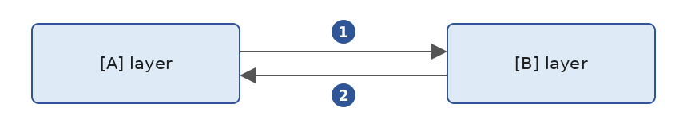

6. 分层架构
6.1. 引言
让我们回顾税款计算应用程序的最新版本（版本 3，第 5 章）。去掉枝节后，它的主程序具有以下结构（简化示意图）：
| // creation of an ITax object from a text or JSON file
ITax tax;
try {
tax = fileName.toLowerCase().endsWith(".json") ? new JsonTax(fileName) : new FileTax(fileName);
} catch (TaxException e) {
IO.println("The following error occurred: [Code=" + e.getCode() + ", Message=" + e.getMessage() + "]");
return;
}
// input loop
while (true) {
String parameters = IO.readln("Tax calculation parameters in the format: ...").strip();
...
// the parameters are correct: we calculate the tax
IO.println("Tax=" + tax.calculate(married.equals("y"), nbChildren, salary) + " euros");
}
|
这个程序结合了大多数应用程序中都有的三类处理：
- 检索存储在文件、数据库等中的数据：第 1–8 行；
- 用户交互：第 11–12 行（输入）和第 14 行（输出）；
- 使用业务算法，即税款计算：第 14 行。这项计算此前由抽象类 [AbstractTax]（[FileTax] 和 [JsonTax] 的父类）执行：在版本 3 中，数据读取和计算仍然合并在同一个对象中。
经验表明，将这些不同的处理过程隔离到不同的类中，可以提高应用程序的可维护性。以这种方式构造的应用程序的架构如下：

这种架构称为“三层架构”（three-tier architecture）。“tier”通常指应用程序中运行在不同机器上的部分。当各部分位于同一台机器上时，则改用“分层架构”（layered architecture）这一术语：
- [business] 层包含应用程序的业务规则。对于我们的应用程序，这些规则用于计算纳税人的税款。该层需要数据才能运行：
- 每年都会变化的税率档；
- 孩子的数量、纳税人的婚姻状况以及年收入；
- 数据访问层，即 [dao] （DAO = Data Access Object，数据访问对象），提供已经存储在文件或数据库中的数据。其中包括税率档，如应用程序的版本 3 所示；
- 用户界面层，即 [ui] （UI = User Interface，用户界面），提供用户输入的数据，并向用户显示结果。在这里，这适用于孩子的数量、婚姻状况和纳税人的年收入。
一般来说：
- [dao] 层处理对持久数据（文件、数据库）或非持久数据（网络、传感器等）的访问；
- [ui] 层处理与用户的交互（如果有用户的话）；
- 通过使用接口，使这三层相互独立。
我们将回头看看已经考察过多次的 [Tax] 应用程序，为它赋予分层架构。首先，我们需要为应用程序的各个层定义接口。
6.2. [Tax] 应用程序的接口
请记住，接口定义了一组方法签名。实现该接口的类为这些方法提供实现。
让我们回到应用程序的分层架构：
在这种架构中，通常由用户主动发起。用户在 [1] 处发出请求，并在 [8] 处收到响应。这称为请求-响应周期。以计算纳税人的税款为例。这需要几个步骤：
- [ui] 层向用户询问其婚姻状况、孩子的数量和年薪。这就是上面描述的操作 [1]；
- 完成之后，[ui] 层请求 [business] 层计算税款。为此，它把从用户那里收到的数据发送给该层。这就是操作 [2]；
- [business] 层需要某些信息才能完成其任务：税率档。它通过路径 [3, 4, 5, 6] 向 [dao] 层请求这些信息：[3] 是初始请求，[6] 是对该请求的响应；
- 拥有了所需的全部数据之后，[business] 层计算税款；
- 现在，[business] 层可以响应 [ui] 层在 [2] 中发出的请求。这就是路径 [7]；
- [ui] 层对这个结果进行格式化，然后呈现给用户。这就是路径 [8]；
- 可以想象，用户可能会运行税款模拟并想要保存它们。他们将使用同样的路径 [1-8] 来完成。
从这段描述可以看出，一个层使用其右侧层的资源，而从不使用其左侧层的资源。考虑两个相邻的层：

层 [A] 向层 [B] 发出请求。在最简单的情形下，一个层由一个类实现。但应用程序会随时间演进，层 [B] 可能先后拥有不同的实现类：[B1]、[B2]，等等。如果 [B] 层是 [dao] 层，它可能有最初的实现 [B1], ，从文件中检索数据。几年之后，你可能想把这些数据存储在数据库中：这时，你就要创建第二个实现类 [B2]。如果在最初的应用程序中，[A] 层直接使用 [B1] 类，我们就不得不部分重写 [A] 层的代码。例如，假设我们在 [A] 层中写了类似下面的代码：
| B1 b1 = new B1(...);
...
b1.getData(...);
|
- 第 1 行：创建 [B1] 类的一个实例；
- 第 3 行：向该实例请求数据。
如果新的实现类 [B2] 所具有的方法与类 [B1] 的方法签名相同，你就需要把所有的 [B1] 实例改为 [B2]。这是最好的情形，而如果你没有注意这些签名，这种情形是相当不可能出现的。实际上，类 [B1] 和 [B2] 通常具有不同的方法签名，这意味着必须重写 [A] 层的很大一部分。
可以通过在 [A] 层和 [B] 层之间插入一个接口来缓解这个问题。这就把 [B] 层向 [A] 层公开的方法签名固定在一个接口中。前面的示意图变为下面这样：

[A] 层不再直接与 [B] 层通信，而是与其 [IB] 接口通信。在 [A] 层的代码中，[Bi] 层 [B] 的实现类现在只出现一次，即在创建实现 [IB] 接口的对象时。此后，使用的是 [IB] 接口，而不是它的实现类。前面的代码变为：
| IB ib = new B1(...);
...
ib.getData(...);
|
- 第 1 行：创建了一个
*[ib] 实例（它实现了 *[IB] 接口），方法是实例化 *[B1]* 类；
- 第 3 行：向 [ib] 实例请求数据。
现在，如果我们把 [B1] 层的 [B] 实现替换为 [B2] 实现，并且这两个实现都遵循同一个 [IB] 接口，那么只需修改 [A] 层的第 1 行。这是一个重大优势，仅凭这一点就足以证明在两个层之间系统地使用接口是合理的。
我们还可以更进一步，使 [A] 层完全独立于 [B] 层。在上面的代码中，第 1 行存在问题，因为它把类名 [B1] 硬编码在了代码中。理想情况下，[A] 层应该在无需指定类名的情况下接收 [IB] 接口的一个实现。这与上面的示意图是一致的：[A] 层与 [IB] 接口对接，没有理由要求它知道实现该接口的类的名称。
这正是依赖注入 （DI）所能实现的。前面的架构演变如下：

一个横切组件，即依赖注入容器，创建实现各层的对象并将它们相互连接：它向 [A] 层传递对实现 [B] 层的对象的引用。于是 [A] 层的代码采用如下形式：
| // the layer [A] receives the layer [B] through its constructor
public class A {
private final IB ib;
public A(IB ib) {
this.ib = ib;
}
public void work() {
...
ib.getData(...);
}
}
|
- 第 5–7 行：[A] 层通过其构造函数接收一个实现 [ib] 接口 [IB] 的实例。创建它的不是 [A] 层，而是容器；
- 第 11 行：向 [ib] 实例请求数据。
实现类 [B1] 不再出现在 [A] 层代码的任何地方。当实现 [B1] 被新的实现 [B2] 取代时，[A] 层的代码不会有任何改变：唯一会改变的是应用程序中告诉容器由哪个类实现 [IB] 的那一处位置。这个位置甚至可以从配置文件中读取要使用的实现的名称。
在 Java 世界中，依赖注入是在 2000 年代初由 Spring 框架推广开来的，当时它的配置写在 XML 文件中。Spring Framework 现在已发展到版本 7，仍然是行业标准；它是 Spring Boot 的基础，我们将在第 13 章“Web 服务”中使用 Spring Boot。我们将在应用程序的版本 5 中使用它的容器（还有其他容器，例如 CDI、Jakarta EE 标准或 Google Guice）。“Java 接口 + 依赖注入”的组合使各层相互独立，从而显著提高了应用程序的可维护性。
让我们回到应用程序的分层架构。在简单的情形下，我们可以从 [business] 层入手，来发现应用程序的接口。要运行，应用程序需要数据：
- 已经存在于文件、数据库中或可通过网络获得的数据。这些数据由 [dao] 层提供；
- 尚未存在的数据。在这种情况下，它们由 [ui] 层提供，该层从用户那里获得这些数据。
[dao] 层必须向 [business] 层提供什么接口？[dao] 层必须向 [business] 层提供税率档。在我们的应用程序中，[dao] 层使用现有数据，但不创建新数据。它的接口可以如下：
| package dao;
import entities.TaxBracket;
import java.util.List;
// [dao] 层的接口
public interface ITaxDao {
// 税率档
List<TaxBracket> getTaxBrackets();
}
|
- 第 1 行：该接口位于包 [dao] 中。因此，文件 [ITaxDao.java] 必须位于名为 [dao] 的文件夹中，我们将看到这一点；
- 第 10 行：[ITaxDao] 接口定义了 [getTaxBrackets] 方法，它向 [business] 层提供税率档。Java 没有属性：只读数据按照 JavaBeans 约定，通过 [getXxx] 方法公开。税率档以 [List<TaxBracket>] 列表而不是数组的形式返回：我们将看到各实现返回的是不可变列表，而数组的元素总是可以被接收方修改；
- 第 3 行：导入类型 [TaxBracket]，它定义在包 [entities] 中：
| package entities;
import java.math.BigDecimal;
// 一档税率：记录，因此是不可修改的类
public record TaxBracket(BigDecimal limit, BigDecimal coeffR, BigDecimal coeffN) {
}
|
税率档用记录 （Java 16）表示：这是一个不可修改的类，编译器会为它生成构造函数（基于类型名称后圆括号中声明的组件）、字段 [private final]、访问器 [limit()]、[coeffR()] 和 [coeffN()]，以及方法 [equals]、[hashCode], 和 [toString]。我们写 [new TaxBracket(limit, coeffR, coeffN)] 来创建一个税率档。这三个组件的类型都是 [BigDecimal]，这是 Java 中表示精确十进制数的类：[double] 无法精确表示 0.068 或 291.09。由于 *[BigDecimal] 本身是不可变的，因此税率档一经创建就无法更改。带有 [setXxx] 方法的传统 JavaBean 类则允许这样做；我们将看到，这一限制消除了实现 [business]* 层的一种旧方式所带来的副作用。
[business] 层应该向 [ui] 层提供什么接口？让我们回顾这两个层之间的交互：
- [ui] 层向用户询问其婚姻状况、孩子的数量和年薪。这是示意图中的操作 [1]；
- 完成之后，[ui] 层请求 [business] 层计算税款。为此，它把从用户那里收到的数据发送给 [business] 层。这是操作 [2]。
层 [business] 的接口可能如下所示：
| package business;
// [business] 层的接口
public interface ITaxBusiness {
int calculateTax(boolean married, int nbChildren, int salary);
}
|
- 第 1 行：与 [business] 层相关的一切都放在 [business] 包中；
- 第 6 行：[ITaxBusiness] 接口只定义了一个方法，它根据纳税人的婚姻状况、孩子的数量和年薪计算纳税人的税款。接口的方法隐式地是公共的和抽象的：无需写 [public abstract]。
我们现在来考察这种分层架构的第一个实现。
6.3. 示例应用程序——版本 4
6.3.1. 项目
版本 4 是一个由多个源文件组成的程序，不使用任何外部库。我们将使用 Java 源代码启动器来运行它，而不创建 Maven 项目。每个层占用一个单独的文件夹：
| TaxV4/
Main.java integration of the layers
TaxData.txt the tax brackets
TaxDataInvalid.txt an incorrect brackets file
entities/
TaxBracket.java
ErrorCode.java
TaxException.java
dao/
ITaxDao.java
HardwiredTax.java
FileTax.java
business/
ITaxBusiness.java
TaxBusiness.java
ui/
Dialog.java
|
- [entities] 文件夹包含 [ui]、[business], 和 [dao] 各层共用的类型：记录 [TaxBracket]、异常 [TaxException], 以及其错误代码的枚举 [ErrorCode] ；
- [dao] 文件夹包含 [dao] 层的接口和类。我们将使用 [ITaxDao] 接口的两个实现：数据硬编码的 [HardwiredTax] 类（版本 2），以及从文本文件读取数据的 [FileTax] 类（版本 3）。读取 JSON 文件（版本 3 中的另一个选项）将在版本 5 中介绍；
- 文件夹 [business] 包含 [business] 层的接口和类；
- 文件夹 [ui] 包含 [ui] 层的类；
- 文件 [Main.java] 创建各个层并把它们连接在一起；
- 文件 [TaxData.txt] 包含由 [dao] 层的 [FileTax] 实现读取的税率档。
与其他语言不同，这里文件夹名称很重要：在 Java 中，[dao] 包中的类位于名为 [dao] 的文件夹中，[tax.dao] 包中的类位于 [tax/dao] 文件夹中，并且这些文件夹是相对于源代码根目录的。编译器和虚拟机正是这样根据类的完全限定名来定位类的。
文件 [Main.java] 是一个紧凑源文件：它没有包声明，因此属于源代码根目录处的无名包。从 Java 22 起（多文件程序启动器，JEP 458），命令 [java Main.java]（在 [TaxV4] 文件夹中输入）就足以运行该程序：源代码启动器在内存中编译 [Main.java] ，每当遇到来自另一个文件的类（例如 [dao.FileTax]）时，它就会查找文件 [dao/FileTax.java] ，查找起点是 [Main.java] 所在的目录，并依次编译它。不会向磁盘写入名为 [.class] 的文件。无名包中的类可以使用其他包中的类，但反过来不行：没有任何类可以导入 [Main]。这就是只把主程序放在那里的原因。
IDE 会原样打开这个文件夹，并且无需任何特殊配置即可运行 [Main.java] 。当程序需要外部库（Jackson、Spring）时，在版本 5 中，我们将切换到 Maven 项目。
6.3.2. 应用程序组件

我们把跨越多个层的类型称为实体。它们通常是封装来自 [dao] 层的数据的类。这些实体通常一直延伸到 [ui] 层。应用程序的实体有前面已经介绍过的 [TaxBracket] 记录，以及 [TaxException] 异常及其错误代码枚举：
| package entities;
import java.util.StringJoiner;
// [dao] 层的错误码：每个码对应一位，因此可以组合
public enum ErrorCode {
ACCESS, LINE, FIELD1, FIELD2, FIELD3;
// 码的位：ACCESS 为 1，LINE 为 2，FIELD1 为 4，FIELD2 为 8，FIELD3 为 16
public int bit() {
return 1 << ordinal();
}
// 位组合中包含的码的名称，例如 24 对应 "FIELD2, FIELD3"
public static String names(int code) {
StringJoiner names = new StringJoiner(", ");
for (ErrorCode c : values()) {
if ((code & c.bit()) != 0) {
names.add(c.name());
}
}
return names.toString();
}
}
|
- 第 6 行：一个枚举（[enum]）。在 Java 中，枚举的值是对象（[ErrorCode] 类的唯一实例），并且枚举可以有方法；
- 第 7 行：五个错误代码。方法 [ordinal()]（继承自类 [Enum]）返回该值在列表中的位置：[ACCESS] 为 0，[FIELD3] 为 4；
- 第 10–12 行：每个代码都与一个位相关联，该位通过左移得到：[1 << ordinal()] 分别等于 1、2、4、8 和 16。这些 2 的幂可以使用运算符 [|] 组合：代码 [FIELD2.bit() | FIELD3.bit()] （8 + 16 = 24）表示一行中的字段 2 和 3 不正确。版本 3 显式指定了每个代码的值（[ACCESS(1)]、[LINE(2)]……），并把组合解码为集合 [EnumSet]；这里根据位置计算位，因而无需这些值。异常的错误代码仍然是一个简单的整数，[dao] 层的所有实现都可以使用它；
- 第 15–23 行：静态方法 [names] 返回位组合中存在的代码的名称：对于 24，返回“FIELD2, FIELD3”。由编译器生成的方法 [values()] 返回枚举值的数组；[code & c.bit()] 不为零，当且仅当与代码 [c] 对应的位存在于 [code] 中；[name()] 返回该值的名称。[StringJoiner] （Java 8）用于连接字符串，并使用提供给其构造函数的分隔符将它们隔开。
| package entities;
import java.io.Serial;
// [dao] 层抛出的异常
// 它派生自 RuntimeException：是非受检异常
public class TaxException extends RuntimeException {
// 用于序列化的类版本（异常是可序列化的）
@Serial
private static final long serialVersionUID = 1L;
// 错误码（ErrorCode 位的组合）
private final int code;
// 构造函数
public TaxException(String message, int code) {
this(message, null, code);
}
public TaxException(String message, Throwable cause, int code) {
super(message, cause);
this.code = code;
}
// 错误码
public int getCode() {
return code;
}
}
|
- 第 7 行：应用程序专用的异常派生自 [RuntimeException] 类；它是一个非受检异常。抛出它的方法不需要在 [throws] 子句中声明它，其调用者也不必捕获它。这是一个层向另一个层报告错误的标准做法；
- 第 10–11 行：异常是可序列化的（类 [Throwable] 实现了接口 [Serializable]）。[serialVersionUID] 字段指定用于序列化的类版本；没有它，在使用 [-Xlint:all] 选项时，编译器会发出警告。注解 [@Serial] （Java 14）使编译器能够验证该字段的声明；
- 第 14 行：错误代码，一个把 [ErrorCode] 的各个位组合起来的整数。该字段是 [final] 的：它在构造函数中初始化，之后不能更改；
- 第 17–24 行：两个构造函数，一个带消息和代码，另一个还带原始异常（原因），可通过 [getCause()] 方法访问。第一个调用第二个（[this(...)]），第二个再调用父类 [RuntimeException] 的构造函数（[super(...)]）；
- 第 27–29 行：错误代码的访问器。
在这个版本中，只有 [dao] 层中的 [FileTax] 类会抛出 [TaxException]。
6.3.3. [dao] 层
让我们回顾 [dao] 层的接口：
| package dao;
import entities.TaxBracket;
import java.util.List;
// [dao] 层的接口
public interface ITaxDao {
// 税率档
List<TaxBracket> getTaxBrackets();
}
|
我们以两种不同的方式实现这个接口。首先是 [HardwiredTax] 类：
| package dao;
import entities.TaxBracket;
import java.math.BigDecimal;
import java.util.List;
// 数据“硬编码”在代码中的 [dao] 层
public class HardwiredTax implements ITaxDao {
// 税率档（2003 年收入的 2004 年税率表）：不可修改的列表
private final List<TaxBracket> taxBrackets = List.of(
bracket("4962", "0", "0"),
bracket("8382", "0.068", "291.09"),
bracket("14753", "0.191", "1322.92"),
bracket("23888", "0.283", "2668.39"),
bracket("38868", "0.374", "4846.98"),
bracket("47932", "0.426", "6883.66"),
bracket("0", "0.481", "9505.54"));
@Override
public List<TaxBracket> getTaxBrackets() {
return taxBrackets;
}
// 由字符串构建的一档：BigDecimal 值是精确的
private static TaxBracket bracket(String limit, String coeffR, String coeffN) {
return new TaxBracket(new BigDecimal(limit), new BigDecimal(coeffR), new BigDecimal(coeffN));
}
}
|
- 第 8 行：类 [HardwiredTax] 实现（[implements]）接口 [ITaxDao]；
- 第 11–18 行：税率档。[List.of] （Java 9）创建一个只读列表：它的方法 [add]、[set] 或 [remove] 会抛出 [UnsupportedOperationException]。该字段在声明时初始化；
- 第 20–23 行：接口方法的实现。注解 [@Override] 指示编译器验证该方法确实正确实现了接口的某个方法：方法名中的拼写错误会导致编译错误；
- 第 26–28 行：一个根据三个字符串创建税率档的私有方法。由字符串构造的 [BigDecimal] 是精确的：[new BigDecimal("0.068")] 恰好是 0.068，而 [new BigDecimal(0.068)] 则会是 0.0680000000000000049……，这是最接近 0.068 的 [double] 值。
[ITaxDao] 接口也由 [FileTax] 类实现，它从文本文件中读取税率档。[TaxData.txt] 文件如下：
| 4962:0:0
8382:0.068:291.09
14753:0.191:1322.92
23888:0.283:2668.39
38868:0.374:4846.98
47932:0.426:6883.66
0:0.481:9505.54
|
每一行以 [limit:coeffR:coeffN] 的格式描述一个税率档。数字使用小数点书写，与系统语言无关；这确保该文件在所有机器上都可读。这些值取自 2004 年的税率表（2003 年收入），原样保留：这是一个练习。类 [FileTax] 如下：
| package dao;
import static entities.ErrorCode.ACCESS;
import static entities.ErrorCode.FIELD1;
import static entities.ErrorCode.FIELD2;
import static entities.ErrorCode.FIELD3;
import static entities.ErrorCode.LINE;
import entities.TaxException;
import entities.TaxBracket;
import java.io.IOException;
import java.math.BigDecimal;
import java.nio.file.Files;
import java.nio.file.NoSuchFileException;
import java.nio.file.Path;
import java.util.ArrayList;
import java.util.List;
// 从文本文件中读取税率档的 [dao] 层
// 每档一行：limit:coeffR:coeffN（小数点）
public class FileTax implements ITaxDao {
// 数据文件，相对于当前文件夹
private final String fileName;
// 税率档
private final List<TaxBracket> taxBrackets;
// 构造函数
public FileTax(String fileName) {
// 我们保存文件名
this.fileName = fileName;
// 读取到的税率档
List<TaxBracket> brackets = new ArrayList<>();
// 逐行读取文件
int lineNumber = 0;
try {
Path path = Path.of(fileName);
if (!Files.exists(path)) {
throw new NoSuchFileException(fileName, null, "The file [" + fileName + "] does not exist");
}
for (String lineRead : Files.readAllLines(path)) {
lineNumber++;
// 空行被忽略
String line = lineRead.strip();
if (line.isEmpty()) {
continue;
}
// 用 : 分隔成三个字段的行
String[] fields = line.split("\\s*:\\s*");
int code = 0;
BigDecimal limit = null, coeffR = null, coeffN = null;
if (fields.length != 3) {
code = LINE.bit();
} else {
// 对 3 个字段的转换：每个错误都会把它的位加到码中
limit = parse(fields[0]);
coeffR = parse(fields[1]);
coeffN = parse(fields[2]);
if (limit == null) code |= FIELD1.bit();
if (coeffR == null) code |= FIELD2.bit();
if (coeffN == null) code |= FIELD3.bit();
}
// 有错误吗？
if (code != 0) {
throw new TaxException("Line no. " + lineNumber + " is incorrect: [" + line + "]", code);
}
// 我们存储新的税率档
brackets.add(new TaxBracket(limit, coeffR, coeffN));
}
} catch (IOException e) {
// 文件访问错误：它被包装在 TaxException 中
throw new TaxException("Error while reading the file " + fileName, e, ACCESS.bit());
}
// 我们返回列表的不可修改副本
taxBrackets = List.copyOf(brackets);
}
public String getFileName() {
return fileName;
}
@Override
public List<TaxBracket> getTaxBrackets() {
return taxBrackets;
}
// 用数字和小数点书写的正数或零；不正确则为 null
private static BigDecimal parse(String field) {
return field.matches("\\d+(\\.\\d+)?") ? new BigDecimal(field) : null;
}
}
|
- 第 3–7 行：静态导入（[import static]，Java 5）允许你使用类的静态成员而无需加上类名前缀。枚举的值是静态成员：我们写 [FIELD1] 而不是 [ErrorCode.FIELD1]；
- 第 21 行：类 [FileTax] 实现接口 [ITaxDao]；
- 第 24、27 行：文件名和读取到的税率档。这些 [final] 字段只在构造函数中初始化一次（第 32 行和第 76 行）。它们由第 79–86 行的方法返回；[getTaxBrackets] 是接口方法；
- 第 30 行：构造函数接收税率档文件的名称；
- 第 34 行：读取到的税率档累积在名为 [ArrayList] 的列表中；
- 第 38 行：[Path.of] （Java 11）创建文件路径。相对路径是相对于当前目录的，即输入 [java] 命令时所在的目录；
- 第 39–41 行：如果文件不存在，就会抛出带有明确消息的 [NoSuchFileException] （[java.nio.file] 包）。它的三参数构造函数接受文件名、可能存在的第二个文件的名称（这里是 [null]）以及错误原因。如果没有这个测试，[Files.readAllLines] 自己也会抛出 [NoSuchFileException] ，但其消息只包含文件名；
- 第 42 行：[Files.readAllLines] 使用 UTF-8 读取整个文件并返回其各行的列表。该方法自己打开和关闭文件。对于大文件，最好使用 [Files.lines] 或 [BufferedReader] 即时读取；
- 第 45 行：[strip()] （Java 11）删除首尾的空格；
- 第 50 行：该行由 [split] 拆分，其参数是一个正则表达式：分隔符是冒号，其前后可以有空格（[\s*] 匹配零个或多个空格）。在 Java 字符串中，反斜杠要写两遍；
- 第 53–54 行：没有三个字段的行是无效的；
- 第 57–62 行：转换这三个字段。每个不正确的字段都会使用运算符 [|=] 在错误代码中加上一个位；
- 第 65–67 行：无效的行会触发 [TaxException]，其消息给出行号和内容。这个异常不是 [IOException]：它不会在第 71 行被捕获，而是原样传播给调用者；
- 第 69 行：读取到的税率档被添加到列表中；
- 第 71–74 行：所有 I/O 错误都源自 [IOException]：文件未找到（[NoSuchFileException]）、权限不足（[AccessDeniedException]）、文件不是 UTF-8 编码（[MalformedInputException]）等等。该错误被包装在代码为 [TaxException] 的 [ACCESS] 异常中；原始异常作为原因被保留；
- 第 76 行：[List.copyOf] （Java 10）返回该列表的只读副本；
- 第 89–91 行：把字段转换为 [BigDecimal]。[matches] 方法验证整个字符串是否与正则表达式 [\d+(\.\d+)?] 匹配：一个或多个数字，后面可以选择性地跟一个句点和更多数字。因此，“0,191”会被拒绝，任何负数也一样。构造函数 [BigDecimal(String)] 不依赖于用户的语言：它始终期望使用小数点。出错时，该方法返回 [null]。
6.3.4. [business] 层
让我们回顾这个层的接口：
| package business;
// [business] 层的接口
public interface ITaxBusiness {
int calculateTax(boolean married, int nbChildren, int salary);
}
|
它的实现 [TaxBusiness], 如下：
| package business;
import dao.ITaxDao;
import entities.TaxBracket;
import java.math.BigDecimal;
import java.math.MathContext;
import java.util.List;
// [business] 层通过其构造函数接收 [dao] 层
public class TaxBusiness implements ITaxBusiness {
// 税率档，一次性向 [dao] 层请求
private final List<TaxBracket> brackets;
// 构造函数
public TaxBusiness(ITaxDao dao) {
brackets = dao.getTaxBrackets();
}
// 税款计算
@Override
public int calculateTax(boolean married, int nbChildren, int salary) {
// 检查参数
if (nbChildren < 0) {
throw new IllegalArgumentException("nbChildren (" + nbChildren + ") must be positive or zero");
}
if (salary < 0) {
throw new IllegalArgumentException("salary (" + salary + ") must be positive or zero");
}
// 份额数
BigDecimal shares = BigDecimal.valueOf(nbChildren).divide(BigDecimal.TWO)
.add(BigDecimal.valueOf(married ? 2 : 1));
if (nbChildren >= 3) {
shares = shares.add(new BigDecimal("0.5"));
}
// 应税收入和家庭商数
BigDecimal income = new BigDecimal("0.72").multiply(BigDecimal.valueOf(salary));
BigDecimal qf = income.divide(shares, MathContext.DECIMAL128);
// 税率档：第一个上限大于或等于 QF 的档，
// 如果没有合适的则取最后一档（不使用它的上限）
TaxBracket bracket = brackets.getLast();
for (int i = 0; i < brackets.size() - 1; i++) {
if (qf.compareTo(brackets.get(i).limit()) <= 0) {
bracket = brackets.get(i);
break;
}
}
// 税款（整数部分）
return income.multiply(bracket.coeffR()).subtract(shares.multiply(bracket.coeffN())).intValue();
}
}
|
- 第 10 行：类 [TaxBusiness] 实现接口 [ITaxBusiness]。[business] 层必须与 [dao] 层协作：因此它通过构造函数（第 16 行）接收对实现 [ITaxDao] 接口的对象的引用；
- 第 13、16–18 行：在构造对象时，[business] 层一次性地向 [dao] 层请求税率档，并将其存储在 [final] 字段中。请注意，[business] 层只通过 [dao] 层的 [ITaxDao] 接口来了解它：它不知道税率档来自代码、文件，还是以后来自数据库；
- 第 24–29 行：[business] 层不信任其调用者。不正确的参数会触发 [IllegalArgumentException]，这是 Java 为这种情况提供的非受检异常，并带有指明该参数的消息；
- 第 31–35 行：份数。[BigDecimal] 没有算术运算符：而是使用它的方法 [add]、[subtract]、[multiply], 和 [divide] 。由于它是不可变的，每个操作都会返回一个新对象，因此有 [shares = shares.add(...)] 这样的写法。除以 [BigDecimal.TWO] （Java 19 中新增的常量）是精确的：3 个孩子得到 1.5 份；
- 第 37–38 行：应税收入和家庭系数。除以份数可能产生无限多位小数（例如除以 3）：如果没有指定精度，[divide] 就会触发 [ArithmeticException]。[MathContext.DECIMAL128] 把结果限制为 34 位有效数字；
- 第 41–47 行：我们查找第一个阈值大于或等于家庭系数的税率档。[BigDecimal] 值使用 [compareTo] 进行比较，它返回负数、零或正数：[qf.compareTo(limit) <= 0] 表示 [qf <= limit]。如果其他税率档都不适用，则使用最后一个税率档 [brackets.getLast()] （Java 21）：它的阈值（0）不会被使用；
- 第 49 行：税款。[intValue()] 返回结果的整数部分。
过去常见的一种做法是在搜索之前修改最后一个税率档的上限（类似于 [brackets[brackets.length - 1].setLimit(qf + 1)]），使搜索循环总是能够停止。这条指令修改了由 [dao] 层提供的数组：这是对所有层共享的数据的副作用。我们在这里已无法再这样写，因为 [TaxBracket] 是不可修改的，包含它们的列表也是如此。现代代码在没有合适的上限时只是简单地取最后一个税率档，而不修改它所接收的数据。
6.3.5. [ui] 层
在版本 2 和 3 中，用户界面是在主程序中、在创建计算对象之后编写的。唯一的区别在于这个对象的创建方式。现在我们把这种交互隔离到 [ui] 层的一个类中，该层只通过 [business] 层的接口来了解它：
| package ui;
import business.ITaxBusiness;
// 与用户的控制台对话：它只了解 [business] 层的接口
public final class Dialog {
// 输入不正确时显示的帮助
private static final String SYNTAX = """
syntax: Married NbChildren Salary
Married: y for married, n for not married
NbChildren: number of children
Salary: annual salary in euros""";
// 工具类：没有实例
private Dialog() {
}
// 对话循环：输入参数、计算、显示
public static void run(ITaxBusiness business) {
while (true) {
// 我们询问税款计算的参数
String input = IO.readln("Tax calculation parameters in the format: "
+ "Married (y/n) NbChildren Salary, or nothing to stop: ");
String parameters = input == null ? "" : input.strip();
// 有事可做吗？
if (parameters.isEmpty()) {
break;
}
// 检查参数个数
String[] fields = parameters.split("\\s+");
if (fields.length != 3) {
IO.println(SYNTAX);
continue;
}
// married
String married = fields[0].toLowerCase();
if (!married.equals("y") && !married.equals("n")) {
IO.println(SYNTAX + "\nIncorrect Married argument: type y or n");
continue;
}
// 子女数
int nbChildren = integer(fields[1]);
if (nbChildren < 0) {
IO.println(SYNTAX + "\nIncorrect NbChildren argument: type a positive or zero integer");
continue;
}
// salary
int salary = integer(fields[2]);
if (salary < 0) {
IO.println(SYNTAX + "\nIncorrect Salary argument: type a positive or zero integer");
continue;
}
// 参数正确：我们请 [business] 层进行计算
IO.println("Tax=" + business.calculateTax(married.equals("y"), nbChildren, salary) + " euros");
}
}
// 正整数或零，如果字符串不是则为 -1
private static int integer(String field) {
try {
return Integer.parseInt(field);
} catch (NumberFormatException e) {
return -1;
}
}
}
|
- 第 6 行：类 [Dialog] 没有自己的状态，只包含静态成员。Java 没有顶层静态类：我们把该类声明为 [final] （不能被继承），并给它一个私有构造函数（第 16–17 行），以防止创建实例；
- 第 9–13 行：帮助消息是一个文本块（Java 15），由三个引号界定。它可以跨越多行；各行的标准缩进会被去除。由于结束引号放在最后一行的末尾，所以文本不以换行符结尾；
- 第 20 行：方法
[run] 以其接口 [business] 的形式接收层 [ITaxBusiness]。它对实现该接口的类以及 [dao] 层一无所知；
- 第 23–25 行：[IO.readln] （Java 25）打印其参数，然后从键盘读取一行。在输入流结束时，它返回 [null] ；然后第 25 行用空字符串替换 [null] ：流结束信号和空行一样会终止对话；
- 第 31 行：输入的行按空格拆分；正则表达式 [\s+] （一个或多个空格）会忽略多余的空格；
- 第 37–38 行：字符串使用 [equals] 比较，绝不使用比较引用的 [==]；
- 第 43–53 行：孩子的数量和薪水必须是正整数或零。[integer] 方法（第 60–66 行）在字段不是整数时返回 -1：[Integer.parseInt] 此时会抛出 [NumberFormatException]，该异常被拦截。因此，负数和不正确的输入都会被同一个检查拒绝；
- 第 55 行：参数正确：向 [business] 层请求计算。
6.3.6. 整合各层
剩下的就是创建各层并把它们连接在一起。这是主程序 [Main.java] 的职责：
| import dao.FileTax;
import dao.HardwiredTax;
import dao.ITaxDao;
import entities.ErrorCode;
import entities.TaxException;
import business.ITaxBusiness;
import business.TaxBusiness;
import ui.Dialog;
// 各层的集成：这是唯一指明实现类名称的地方
// 参数："hardwired" 表示 HardwiredTax，
// 否则为 FileTax 读取的文件名（默认为 TaxData.txt）
void main(String[] args) {
String source = args.length > 0 ? args[0] : "TaxData.txt";
ITaxBusiness business;
try {
// 创建 [dao] 层
ITaxDao dao = source.equals("hardwired") ? new HardwiredTax() : new FileTax(source);
// 创建 [business] 层，它接收 [dao] 层
business = new TaxBusiness(dao);
} catch (TaxException e) {
// 显示错误并以退出码 1 停止程序
String origin = e.getCause() == null ? "" : ", original exception: " + e.getCause().getMessage();
IO.println("The following error occurred: [Code=" + ErrorCode.names(e.getCode())
+ ", Message=" + e.getMessage() + origin + "]");
System.exit(1);
return;
}
// [ui] 层：与用户的对话
Dialog.run(business);
}
|
- 第 1–8 行：紧凑源文件（Java 25）没有类声明，但可以包含导入。编译器把其内容放入一个隐式类中；
- 第 13 行：[main] 方法通过 [args] 数组接收命令行参数。该参数选择 [dao] 层的实现：[hardwired] 表示 [HardwiredTax] 类；否则就是 [FileTax] 类所读取的文件名，默认为 [TaxData.txt] ；
- 第 18 行：创建 [dao] 层。这是程序中唯一提到类 [HardwiredTax] 和 [FileTax] 名称的地方；
- 第 20 行：创建 [business] 层，它接收 [dao] 层；
- 第 21–28 行：创建 [dao] 层时可能会触发 [TaxException]。随后显示该错误以及原始异常的消息（如果有），程序以退出码 1 终止（[System.exit(1)]）。错误代码使用 [ErrorCode.names] 方法以纯文本显示。第 27 行的 [return] 语句永远不会被执行，但编译器并不知道 [System.exit] 不会交还控制权：没有它，编译器会报告变量 [business] 在第 31 行可能尚未初始化；
- 第 31 行：各层已就绪：[ui] 层与用户交互。
6.3.7. 运行
在 [TaxV4] 文件夹中，使用 [TaxData.txt] 文件（[FileTax] 实现），并在测试输入验证时：
| > java Main.java
Tax calculation parameters in the format: Married (y/n) NbChildren Salary, or nothing to stop: y 2 60000
Tax=4282 euros
Tax calculation parameters in the format: Married (y/n) NbChildren Salary, or nothing to stop: n 3 60000
Tax=4282 euros
Tax calculation parameters in the format: Married (y/n) NbChildren Salary, or nothing to stop: x 2 60000
syntax: Married NbChildren Salary
Married: y for married, n for not married
NbChildren: number of children
Salary: annual salary in euros
Incorrect Married argument: type y or n
Tax calculation parameters in the format: Married (y/n) NbChildren Salary, or nothing to stop: y 2
syntax: Married NbChildren Salary
Married: y for married, n for not married
NbChildren: number of children
Salary: annual salary in euros
Tax calculation parameters in the format: Married (y/n) NbChildren Salary, or nothing to stop: y -2 60000
syntax: Married NbChildren Salary
Married: y for married, n for not married
NbChildren: number of children
Salary: annual salary in euros
Incorrect NbChildren argument: type a positive or zero integer
Tax calculation parameters in the format: Married (y/n) NbChildren Salary, or nothing to stop: y 2 60000€
syntax: Married NbChildren Salary
Married: y for married, n for not married
NbChildren: number of children
Salary: annual salary in euros
Incorrect Salary argument: type a positive or zero integer
Tax calculation parameters in the format: Married (y/n) NbChildren Salary, or nothing to stop:
|
使用实现 [HardwiredTax]：
| > java Main.java hardwired
Tax calculation parameters in the format: Married (y/n) NbChildren Salary, or nothing to stop: y 2 60000
Tax=4282 euros
Tax calculation parameters in the format: Married (y/n) NbChildren Salary, or nothing to stop: y 3 60000
Tax=2959 euros
Tax calculation parameters in the format: Married (y/n) NbChildren Salary, or nothing to stop:
|
对于一个不存在的文件：
| > java Main.java TaxDataMissing.txt
The following error occurred: [Code=ACCESS, Message=Error while reading the file TaxDataMissing.txt, original exception: TaxDataMissing.txt: The file [TaxDataMissing.txt] does not exist]
|
错误代码是 [ACCESS]，并显示原始异常的消息 [NoSuchFileException]：它由文件名以及提供给其创建者的原因组成。
使用下面的文件 [TaxDataInvalid.txt]，其中第 3 行包含小数逗号：
| 4962:0:0
8382:0.068:291.09
14753:0,191:1322,92
23888:0.283:2668.39
|
结果是：
| > java Main.java TaxDataInvalid.txt
The following error occurred: [Code=FIELD2, FIELD3, Message=Line no. 3 is incorrect: [14753:0,191:1322,92]]
|
第 3 行的字段 2 和 3 不正确：错误代码组合了 [FIELD2] 和 [FIELD3] 的位，[ErrorCode.names] 方法将其显示为“FIELD2, FIELD3”。
6.3.8. 结论
分层架构和接口的使用为我们的应用程序带来了一定的灵活性。这一点在主程序创建 [dao] 层和 [business] 层的方式中体现得很明显：
| // 创建 [dao] 层
ITaxDao dao = source.equals("hardwired") ? new HardwiredTax() : new FileTax(source);
// 创建 [business] 层，它接收 [dao] 层
business = new TaxBusiness(dao);
|
更改 [dao] 层的实现只影响第 2 行。各层创建完成之后，[ui] 层的代码在两种情况下是相同的：在那里，[business] 层是通过其 [ITaxBusiness] 接口而不是其实现类来操作的。
同样的灵活性在 [business] 层中也很明显：它是基于对 [dao] 层接口的引用构建的。因此，更改后者的实现对 [business] 层没有任何影响。这就是为什么我们唯一的 [TaxBusiness] 类无需修改就能与 [dao] 层的两种不同实现一起工作。
6.4. 示例应用程序 - 版本 5

这个新版本在前一个版本的基础上做了以下改动：
- 层 [dao] 和 [business] 各自放在一个生成库（JAR 文件）的 Maven 模块中，并使用单元测试框架 JUnit 进行测试；
- [dao] 层现在包含第三个实现 [JsonTax]，它使用 Jackson 库从 JSON 文件中读取税率档；
- 各层的整合由 Spring 的依赖注入容器负责，[dao] 层的实现则从配置文件中选择。
在大型项目中，多个开发人员共同开发同一个应用程序。分层架构有利于这种工作方式：由于各层通过定义良好的接口相互通信，负责某一层的开发人员不必操心其他开发人员在其他层上的工作。所需要的只是每个人都遵守接口。
因此，要测试 [business] 层，开发人员需要一个 [dao] 层的实现。在该实现完成之前，他们可以使用 [dao] 层的一个虚拟实现，只要它遵守 [ITaxDao] 接口即可。这是分层架构的另一个优势：[dao] 层的延迟并不妨碍测试 [business] 层。模拟实现的另一个优点是，它比真正的 [dao] 层（可能需要 DBMS、网络连接等）简单得多，更容易搭建。
一旦 [dao] 层完成并通过测试，它就以库（发布到 Maven 仓库中的 JAR 文件）而不是需要复制的源代码的形式提供给 [business] 层的开发人员。最终，应用程序以一个主程序（来自 [ui] 层的程序）和若干类库（其他层）的形式交付。
6.4.1. TaxV5 Maven 项目
版本 5 是一个多模块 Maven 项目：一个本身不产生任何内容的父项目，包含三个模块，每个层一个。测试并不构成单独的项目：Maven 约定把模块的测试放在其 [src/test/java] 文件夹中。它们由 Maven 编译和运行，但不属于模块的 JAR 文件。由此得到如下目录结构：
| TaxV5/
pom.xml parent project
tax-dao/ module: entities and [dao] layer (jar)
pom.xml
TaxData.txt
TaxData.json
TaxDataInvalid.txt an incorrect brackets file, for the tests
src/main/java/tax/entities/
TaxBracket.java
TaxException.java
src/main/java/tax/dao/
ITaxDao.java
HardwiredTax.java
FileTax.java
JsonTax.java
src/test/java/tax/dao/
DaoTests.java JUnit tests
TrialDao.java trial program
tax-business/ module: [business] layer (jar)
pom.xml
src/main/java/tax/business/
ITaxBusiness.java
TaxBusiness.java
src/test/java/tax/business/
BusinessTests.java JUnit tests
TrialBusiness.java trial program
tax-ui/ module: [ui] layer and integration of the layers
pom.xml
tax.properties configuration files
tax-json.properties
tax-hardwired.properties
tax-error.properties
TaxData.txt
TaxData.json
src/main/java/tax/ui/
Dialog.java
Main.java
TaxConfig.java
MainConfig.java
|
包现在以 [tax]: [tax.entities], [tax.dao], [tax.business], [tax.ui] 为前缀。模块 [tax-dao] 和 [tax-business] 实际上将被其他项目（第 10 至 13 章）复用，而同一个程序所使用的两个库不得定义两个具有相同完全限定名的类。在专业项目中，包以组织的反向域名作为前缀（[org.springframework]、[tools.jackson]……），这可以确保名称唯一。
父项目中的文件 [pom.xml] 如下：
| <?xml version="1.0" encoding="UTF-8"?>
<!-- [Tax] 应用程序版本 5 的父项目：每层一个 Maven 模块 -->
<project xmlns="http://maven.apache.org/POM/4.0.0"
xmlns:xsi="http://www.w3.org/2001/XMLSchema-instance"
xsi:schemaLocation="http://maven.apache.org/POM/4.0.0 https://maven.apache.org/xsd/maven-4.0.0.xsd">
<modelVersion>4.0.0</modelVersion>
<groupId>examples.tax</groupId>
<artifactId>tax-v5</artifactId>
<version>5.0</version>
<packaging>pom</packaging>
<!-- 模块，按其依赖关系的顺序排列 -->
<modules>
<module>tax-dao</module>
<module>tax-business</module>
<module>tax-ui</module>
</modules>
<properties>
<maven.compiler.release>25</maven.compiler.release>
<project.build.sourceEncoding>UTF-8</project.build.sourceEncoding>
</properties>
<!-- 库的版本，所有模块共用 -->
<dependencyManagement>
<dependencies>
<dependency>
<groupId>examples.tax</groupId>
<artifactId>tax-dao</artifactId>
<version>5.0</version>
</dependency>
<dependency>
<groupId>examples.tax</groupId>
<artifactId>tax-business</artifactId>
<version>5.0</version>
</dependency>
<dependency>
<groupId>tools.jackson.core</groupId>
<artifactId>jackson-databind</artifactId>
<version>3.1.5</version>
</dependency>
<dependency>
<groupId>org.springframework</groupId>
<artifactId>spring-context</artifactId>
<version>7.0.9</version>
</dependency>
<dependency>
<groupId>org.junit.jupiter</groupId>
<artifactId>junit-jupiter</artifactId>
<version>6.0.3</version>
</dependency>
</dependencies>
</dependencyManagement>
<!-- 所有模块的测试所用的 JUnit -->
<dependencies>
<dependency>
<groupId>org.junit.jupiter</groupId>
<artifactId>junit-jupiter</artifactId>
<scope>test</scope>
</dependency>
</dependencies>
<build>
<pluginManagement>
<plugins>
<plugin>
<groupId>org.apache.maven.plugins</groupId>
<artifactId>maven-compiler-plugin</artifactId>
<version>3.15.0</version>
<configuration>
<!-- 在编译后的代码中保留方法参数的名称 -->
<parameters>true</parameters>
<compilerArgs>
<arg>-Xlint:all</arg>
</compilerArgs>
</configuration>
</plugin>
<plugin>
<groupId>org.apache.maven.plugins</groupId>
<artifactId>maven-surefire-plugin</artifactId>
<version>3.5.6</version>
</plugin>
<plugin>
<groupId>org.codehaus.mojo</groupId>
<artifactId>exec-maven-plugin</artifactId>
<version>3.5.1</version>
</plugin>
</plugins>
</pluginManagement>
</build>
</project>
|
- 第 8–11 行：父项目的详细信息：组 [examples.tax]，名称 [tax-v5]，版本 [5.0]。打包类型 [pom] 表明该项目不生成 JAR 文件：它只是把模块组合在一起，并对它们应用统一的配置；
- 第 14–18 行：模块，即子文件夹，每个子文件夹都包含一个 Maven 项目。在 [TaxV5] 文件夹中输入的 Maven 命令适用于所有模块，按其依赖关系决定的顺序执行：[tax-dao]，然后 [tax-business]，然后 [tax-ui]；
- 第 20–23 行：由模块继承的属性：Java 25 和 UTF-8 编码的源文件；
- 第 26–54 行：[dependencyManagement] 部分指定依赖项的版本，但不把它们添加到模块中。需要某个依赖项的模块在声明它时不写版本；这样，所有版本都集中在一处。它包括应用程序模块本身（第 28–37 行）、Jackson 3（第 38–42 行）、Spring 容器（第 43–47 行）和 JUnit（第 48–52 行）；
- 第 57–63 行：父项目的 [dependencies] 部分把它的依赖项添加到所有模块中：这里是 JUnit，其作用域为 [test]。作用域为 [test] 的依赖项仅用于编译和运行测试：它不会包含在所生成库的依赖项中；
- 第 66–91 行：[pluginManagement] 部分同样为所有模块设置 Maven 插件的版本和配置：编译器（带有 [-Xlint:all] 选项，第 75–77 行）、运行测试的 Surefire（[mvn test]），以及运行程序的 exec（[mvn exec:java]）。第 74 行指示编译器在编译后的代码中保留方法参数的名称：JUnit 用它来显示参数化测试，我们将看到这一点。
使用在 [TaxV5] 文件夹中输入的下列命令来构建应用程序：
对于每个模块，Maven 按以下顺序执行其生命周期的各个阶段：编译（[compile]）、编译并执行测试（[test]）、在模块的 [target] 文件夹中创建 JAR 文件（[package]），最后是安装（[install]）。如果某个测试失败，构建就会停止。[install] 阶段把每个模块的 JAR 文件和 [pom.xml] 文件 复制到用户的本地 Maven 仓库，即 [~/.m2/repository] 文件夹：例如，[examples/tax/tax-dao/5.0/tax-dao-5.0.jar] 文件就位于那里。Maven 在从 Maven Central 下载依赖项之前，会先在这个本地仓库中搜索它们。这个本地仓库有两个用途：
- 在模块的文件夹中输入的 Maven 命令（例如，
[mvn exec:java] 在 [tax-ui] 文件夹中运行）会在本地仓库中找到该模块所依赖的模块；
- 第 10 至 13 章的应用程序在其 [pom.xml] 文件中声明了对 [examples.tax:tax-dao:5.0], [examples.tax:tax-business:5.0] 的依赖，并且对于 [Dialog] 类，则声明了对 [examples.tax:tax-ui:5.0] 的依赖：因此它们可以复用版本 5 中的各层而无需复制源代码，就像使用 Jackson 或 Spring 那样。
因此，在对某个模块做出任何更改之后，必须重新运行 [mvn install] ，其他项目才能看到新版本。选项 [-DskipTests] 跳过测试的运行，而选项 [-q] （“quiet”，安静）则把 Maven 的输出限制为仅显示错误。
如果在安装版本 5 之前，就在 IDE 中打开依赖这些模块的项目，Maven 会徒劳地在 Maven Central 上搜索它们，而 IDE 会报告无法解析的依赖项，例如在 IntelliJ IDEA 中报告“Unresolved dependency: 'examples.tax:tax-dao:jar:5.0'”。Maven 会记录这次失败：它会在本地仓库中每个模块的文件夹里留下名为 [*.lastUpdated] 的文件（[%USERPROFILE%\.m2\repository\examples\tax\tax-dao\5.0] 等等），并且在 [mvn install] 构建之后，该错误可能仍然存在。解决办法：
- 安装版本 5（运行 [mvn install] ，位置在 [TaxV5] 文件夹中；或者在 IntelliJ 中依次选择“Maven”面板 / [tax-v5] / “Lifecycle ” / [install]）；
- 从本地仓库中删除 [*.lastUpdated] 文件，位置在 [tax-dao/5.0]、[tax-business/5.0] 和 [tax-ui/5.0] 下，不要动 [.jar] 和 [.pom] 文件；
- 重新同步项目（使用“Maven”面板中的“Sync All Maven Projects”按钮），如果错误仍然存在，则清除 IntelliJ 的缓存（“File / Invalidate Caches… / Invalidate and Restart”）。
要确定问题出在 Maven 还是 IDE，请在依赖版本 5 的项目文件夹中输入 [mvn compile] ：如果 Maven 回应“BUILD SUCCESS”，则依赖项是正确的，只需要重新同步 IDE。
6.4.2. [dao] 层
[tax-dao] 模块包含 [dao] 层和应用程序的实体。它的 [pom.xml] 文件如下：
| <?xml version="1.0" encoding="UTF-8"?>
<project xmlns="http://maven.apache.org/POM/4.0.0"
xmlns:xsi="http://www.w3.org/2001/XMLSchema-instance"
xsi:schemaLocation="http://maven.apache.org/POM/4.0.0 https://maven.apache.org/xsd/maven-4.0.0.xsd">
<modelVersion>4.0.0</modelVersion>
<!-- 父项目提供共用的版本和配置 -->
<parent>
<groupId>examples.tax</groupId>
<artifactId>tax-v5</artifactId>
<version>5.0</version>
</parent>
<artifactId>tax-dao</artifactId>
<dependencies>
<!-- 用于读取 JSON 文件的 Jackson -->
<dependency>
<groupId>tools.jackson.core</groupId>
<artifactId>jackson-databind</artifactId>
</dependency>
</dependencies>
</project>
|
- 第 8–12 行：父项目。该模块从它继承组和版本；只指定了模块自己的名称（第 14 行）。因此它的坐标是 [examples.tax:tax-dao:5.0]；
- 第 18–21 行：对 Jackson 的依赖，不带版本：版本由父项目确定。JUnit 继承自父项目。
实体
记录 [TaxBracket] 与版本 4 相同（包 [tax.entities]）。枚举 [ErrorCode] 被移除：因此 [TaxException] 成为 [dao] 层所有实现共用的异常，而不与其中任何一个实现的代码相关联：
| package tax.entities;
import java.io.Serial;
// [Tax] 应用程序的异常，无论由哪一层抛出
// 它派生自 RuntimeException：是非受检异常
public class TaxException extends RuntimeException {
// 用于序列化的类版本（异常是可序列化的）
@Serial
private static final long serialVersionUID = 1L;
// 错误码
private final int code;
// 构造函数
public TaxException(String message) {
this(message, null, 0);
}
public TaxException(String message, Throwable cause) {
this(message, cause, 0);
}
public TaxException(String message, int code) {
this(message, null, code);
}
public TaxException(String message, Throwable cause, int code) {
super(message, cause);
this.code = code;
}
// 错误码
public int getCode() {
return code;
}
}
|
- 第 14 行：错误代码仍然是一个简单的整数：[dao] 层的每个实现都定义自己的代码；
- 第 17–32 行：四个构造函数，带或不带原因，带或不带代码。它们都调用最后一个。在没有代码时，该代码为 0。
[FileTax] 实现
[ITaxDao] 接口和 [HardwiredTax] 类与版本 4 中的相同。[FileTax] 类只在书写错误代码的方式上有所不同：
| // 从文本文件中读取税率档的 [dao] 层
// 每档一行：limit:coeffR:coeffN（小数点）
public class FileTax implements ITaxDao {
// 此实现特有的错误码：2 的幂，可以组合
public static final int ACCESS = 1, LINE = 2, FIELD1 = 4, FIELD2 = 8, FIELD3 = 16;
// 数据文件，相对于当前文件夹
private final String fileName;
// 税率档
private final List<TaxBracket> taxBrackets;
|
- 第 6 行：错误代码此前位于实体包中的 [ErrorCode] 枚举里，现在已成为 [FileTax] 类中的常量：它们实际上是 [ITaxDao] 接口的这个实现所特有的代码（[JsonTax] 有它自己的代码）。在 Java 中，常量是一个 [static final] 字段，按惯例其名称用大写字母书写。可以在同一条语句中声明多个相同类型的字段。常量在类内部写作 [FIELD1] ，在类外部写作 [FileTax.FIELD1] 。版本 4 中的静态导入不再需要。
接着在构造函数中：
| String[] fields = line.split("\\s*:\\s*");
int code = 0;
BigDecimal limit = null, coeffR = null, coeffN = null;
if (fields.length != 3) {
code = LINE;
} else {
// 对 3 个字段的转换：每个错误都会加上它的码
limit = parse(fields[0]);
coeffR = parse(fields[1]);
coeffN = parse(fields[2]);
if (limit == null) code |= FIELD1;
if (coeffR == null) code |= FIELD2;
if (coeffN == null) code |= FIELD3;
}
// 有错误吗？
if (code != 0) {
throw new TaxException("Line no. " + lineNumber + " is incorrect: [" + line + "]", code);
}
// 我们存储新的税率档
brackets.add(new TaxBracket(limit, coeffR, coeffN));
}
} catch (IOException e) {
// 文件访问错误：它被包装在 TaxException 中
throw new TaxException("Error while reading the file " + fileName, e, ACCESS);
}
|
- 第 4–14 行：这些代码是整数，直接使用运算符 [|=] 组合；
- 第 17、24 行：错误连同其代码一起被封装在 [TaxException] 中。
[JsonTax] 实现
与第 5 章的版本 3 一样，[dao] 层的第三个实现使用 Jackson 库从 JSON 文件中读取税率档。[TaxData.json] 文件如下：
| [
{ "limit": 4962, "coeffR": 0, "coeffN": 0 },
{ "limit": 8382, "coeffR": 0.068, "coeffN": 291.09 },
{ "limit": 14753, "coeffR": 0.191, "coeffN": 1322.92 },
{ "limit": 23888, "coeffR": 0.283, "coeffN": 2668.39 },
{ "limit": 38868, "coeffR": 0.374, "coeffN": 4846.98 },
{ "limit": 47932, "coeffR": 0.426, "coeffN": 6883.66 },
{ "limit": 0, "coeffR": 0.481, "coeffN": 9505.54 }
]
|
[JsonTax] 类如下：
| package tax.dao;
import tax.entities.TaxException;
import tax.entities.TaxBracket;
import java.io.IOException;
import java.nio.file.Files;
import java.nio.file.NoSuchFileException;
import java.nio.file.Path;
import java.util.List;
import tools.jackson.core.JacksonException;
import tools.jackson.databind.json.JsonMapper;
// 从 JSON 文件中读取税率档的 [dao] 层
public class JsonTax implements ITaxDao {
// 此实现特有的错误码
public static final int ACCESS = 1, FORMAT = 2;
// 数据文件，相对于当前文件夹
private final String fileName;
// 税率档
private final List<TaxBracket> taxBrackets;
// 构造函数
public JsonTax(String fileName) {
this.fileName = fileName;
String json;
try {
Path path = Path.of(fileName);
if (!Files.exists(path)) {
throw new NoSuchFileException(fileName, null, "The file [" + fileName + "] does not exist");
}
json = Files.readString(path);
} catch (IOException e) {
throw new TaxException("Error while reading the file " + fileName, e, ACCESS);
}
try {
// 将 JSON 数组反序列化为 TaxBracket 记录数组
TaxBracket[] brackets = JsonMapper.builder().build().readValue(json, TaxBracket[].class);
if (brackets == null) {
throw new TaxException("the file does not contain an array");
}
taxBrackets = List.of(brackets);
} catch (JacksonException | TaxException e) {
throw new TaxException("The file " + fileName
+ " is not a valid JSON file of tax brackets", e, FORMAT);
}
}
public String getFileName() {
return fileName;
}
@Override
public List<TaxBracket> getTaxBrackets() {
return taxBrackets;
}
}
|
- 第 17 行：这个实现的错误代码：文件访问错误或内容不正确；
- 第 29–37 行：文件通过 [Files.readString] （Java 11）被整个读入一个字符串，其 I/O 错误处理与 [FileTax] 中相同；
- 第 40 行：JSON 字符串被转换为数组 [TaxBracket[]]。在包名以 [tools.jackson] 开头的 Jackson 3 中，执行转换的 [JsonMapper] 对象是不可变的：它通过一个中间对象，即“构建器”（[JsonMapper.builder()...build()]）来构造。它的 [readValue] 方法接受 JSON 文本以及要创建的对象的类，这里是 [TaxBracket[].class]。Jackson 知道如何构造记录：它把 JSON 名称（[limit]、[coeffR]、[coeffN]）映射到记录的组件，并调用其构造函数。数字被直接读入 [BigDecimal]（组件的类型），而不经过 [double]：因此它们是精确的；
- 第 41–43 行：[readValue] 返回 [null] ，如果文件包含字面量 JSON [null]；这时会抛出异常；
- 第 44 行：数组变成不可变列表；
- 第 45–48 行：不是税率档 JSON 数组的文件会引发 [JacksonException]。在 Jackson 3 中，这个异常派生自 [RuntimeException]：它是一个非受检异常。[catch] 块捕获两种类型的异常（“多重捕获”，Java 7），并把它们包装在类型为 [TaxException] 的 [FORMAT] 异常中。
测试程序
在编写自动化测试之前，让我们先对 [dao] 层做一次初步的目视测试。程序 [TrialDao] 显示三个实现提供的税率档。我们把它放在模块的测试源代码中（[src/test/java]）：它不会被包含在 [dao] 层的 JAR 文件中：
| package tax.dao;
import tax.entities.TaxException;
import tax.entities.TaxBracket;
import java.util.List;
// 试验程序：[dao] 层的三种实现所提供的税率档
public class TrialDao {
public static void main(String[] args) {
try {
List<ITaxDao> daos = List.of(
new HardwiredTax(), new FileTax("TaxData.txt"), new JsonTax("TaxData.json"));
for (ITaxDao dao : daos) {
IO.println("--- " + dao.getClass().getSimpleName());
for (TaxBracket bracket : dao.getTaxBrackets()) {
IO.println(bracket);
}
}
} catch (TaxException e) {
// 显示错误
String origin = e.getCause() == null ? ""
: ", original exception: " + e.getCause().getMessage();
IO.println("The following error occurred: [Code=" + e.getCode()
+ ", Message=" + e.getMessage() + origin + "]");
}
}
}
|
- 第 10 行：[main] 方法。从 Java 25 起，它不再需要是 public 的，也不必接受程序参数；在 Maven 项目中，我们保留它的经典形式 [public static void main(String[] args)]，所有工具（[exec-maven-plugin] 插件、IDE）都能识别它；
- 第 12–13 行：[ITaxDao] 接口的三个实现的列表；
- 第 15 行：[getClass()] 返回对象的实际类，其名称（不含包）为 [getSimpleName()]；
- 第 17 行：[IO.println] 使用其方法 [toString] 显示税率档，该方法是编译器为记录生成的；
- 第 20–26 行：处理可能出现的 [TaxException]。
该程序在 [tax-dao] 文件夹中运行。[test-compile] 阶段编译主源代码和测试源代码；参数 [exec.mainClass] 指定要执行的类，而 [exec.classpathScope=test] 指示 exec 插件使用测试类以及作用域为 [test] 的依赖项：
| > mvn -q test-compile exec:java -Dexec.mainClass=tax.dao.TrialDao -Dexec.classpathScope=test
--- HardwiredTax
TaxBracket[limit=4962, coeffR=0, coeffN=0]
TaxBracket[limit=8382, coeffR=0.068, coeffN=291.09]
TaxBracket[limit=14753, coeffR=0.191, coeffN=1322.92]
TaxBracket[limit=23888, coeffR=0.283, coeffN=2668.39]
TaxBracket[limit=38868, coeffR=0.374, coeffN=4846.98]
TaxBracket[limit=47932, coeffR=0.426, coeffN=6883.66]
TaxBracket[limit=0, coeffR=0.481, coeffN=9505.54]
--- FileTax
TaxBracket[limit=4962, coeffR=0, coeffN=0]
TaxBracket[limit=8382, coeffR=0.068, coeffN=291.09]
TaxBracket[limit=14753, coeffR=0.191, coeffN=1322.92]
TaxBracket[limit=23888, coeffR=0.283, coeffN=2668.39]
TaxBracket[limit=38868, coeffR=0.374, coeffN=4846.98]
TaxBracket[limit=47932, coeffR=0.426, coeffN=6883.66]
TaxBracket[limit=0, coeffR=0.481, coeffN=9505.54]
--- JsonTax
TaxBracket[limit=4962, coeffR=0, coeffN=0]
TaxBracket[limit=8382, coeffR=0.068, coeffN=291.09]
TaxBracket[limit=14753, coeffR=0.191, coeffN=1322.92]
TaxBracket[limit=23888, coeffR=0.283, coeffN=2668.39]
TaxBracket[limit=38868, coeffR=0.374, coeffN=4846.98]
TaxBracket[limit=47932, coeffR=0.426, coeffN=6883.66]
TaxBracket[limit=0, coeffR=0.481, coeffN=9505.54]
|
三个实现返回的税率档完全相同。[toString] 方法 [BigDecimal] 总是写出小数点，与用户的语言无关。
6.4.3. [business] 层
[pom.xml] 文件（位于 [tax-business] 模块中）如下：
| <?xml version="1.0" encoding="UTF-8"?>
<project xmlns="http://maven.apache.org/POM/4.0.0"
xmlns:xsi="http://www.w3.org/2001/XMLSchema-instance"
xsi:schemaLocation="http://maven.apache.org/POM/4.0.0 https://maven.apache.org/xsd/maven-4.0.0.xsd">
<modelVersion>4.0.0</modelVersion>
<!-- 父项目提供共用的版本和配置 -->
<parent>
<groupId>examples.tax</groupId>
<artifactId>tax-v5</artifactId>
<version>5.0</version>
</parent>
<artifactId>tax-business</artifactId>
<dependencies>
<!-- [business] 层使用 [dao] 层 -->
<dependency>
<groupId>examples.tax</groupId>
<artifactId>tax-dao</artifactId>
</dependency>
</dependencies>
</project>
|
- 第 18–21 行：[business] 层使用 [dao] 层。在 [TaxV5] 文件夹中，Maven 先构建 [tax-dao] 再构建 [tax-business]；在 [tax-business] 文件夹中，它在本地仓库中找到 [tax-dao] ，这是 [mvn install] 放到那里的。依赖是传递的：该模块还会得到 [tax-dao] 所依赖的 Jackson。
[ITaxBusiness] 接口和 [TaxBusiness] 类与版本 4 中的相同（包 [tax.business]）。位于该模块测试源代码中的测试程序 [TrialBusiness] 执行了一些税款计算：
| package tax.business;
import tax.dao.FileTax;
import tax.entities.TaxException;
// 试验程序：用 FileTax [dao] 层进行几次税款计算
public class TrialBusiness {
public static void main(String[] args) {
try {
// 税率档文件是 tax-dao 模块中的文件（相对于当前文件夹的路径）
ITaxBusiness business = new TaxBusiness(new FileTax("../tax-dao/TaxData.txt"));
IO.println("Tax(true,2,60000)=" + business.calculateTax(true, 2, 60000) + " euros");
IO.println("Tax(false,3,60000)=" + business.calculateTax(false, 3, 60000) + " euros");
IO.println("Tax(false,3,6000)=" + business.calculateTax(false, 3, 6000) + " euros");
IO.println("Tax(false,3,600000)=" + business.calculateTax(false, 3, 600000) + " euros");
} catch (TaxException e) {
// 显示错误
String origin = e.getCause() == null ? ""
: ", original exception: " + e.getCause().getMessage();
IO.println("The following error occurred: [Code=" + e.getCode()
+ ", Message=" + e.getMessage() + origin + "]");
}
}
}
|
- 第 12 行：创建 [dao] 层和 [business] 层。层 [dao] 由类 [FileTax] 实现。由于程序在 [tax-business] 文件夹中运行，相对路径 [../tax-dao/TaxData.txt] 指向 [tax-dao] 模块的数据文件；
- 第 13–16 行：对 [ITaxBusiness] 接口的唯一方法的重复调用。
结果，在 [tax-business] 文件夹中：
| > mvn -q test-compile exec:java -Dexec.mainClass=tax.business.TrialBusiness -Dexec.classpathScope=test
Tax(true,2,60000)=4282 euros
Tax(false,3,60000)=4282 euros
Tax(false,3,6000)=0 euros
Tax(false,3,600000)=179275 euros
|
有 2 个孩子的已婚夫妇和有 3 个孩子的单身人士拥有相同的份数（3）：他们的税款相等。
6.4.4. 使用 JUnit 的单元测试
6.4.4.1. 原理
到目前为止进行的测试依赖于目视验证：我们检查屏幕上是否显示了预期的结果。当需要运行许多测试时，这种方法并不实用：人容易疲劳，随着一天时间的推移，其验证结果的能力会下降。因此，测试必须自动化，并且不需要人工干预。
应用程序会随时间演进。每次更新时，我们都必须验证它没有“回归”，也就是说，它仍然能通过其最初开发期间执行的功能测试。这些测试称为回归测试。一个中等规模的应用程序可能需要数百个测试：实际上，应用程序中每个类的每个方法都要经过测试。这些称为单元测试。
已经开发出一些框架来自动化这些测试。在 Java 中，主流框架是 JUnit，由 Kent Beck 和 Erich Gamma 于 20 世纪 90 年代末创建。我们使用 2025 年底发布的版本 6（这里是版本 6.0.3）；它的 API，即包含在 [org.junit.jupiter.api] 包中的那个，是 JUnit 的第 5 版，也称为 JUnit Jupiter（TestNG 是基于相同原理的另一个框架）。测试通过命令行中的 [mvn test] 命令运行：这使得它们可以被自动启动，例如每当代码更改被推送到持续集成服务器时。IDE（IntelliJ IDEA，以及带有 Extension Pack for Java 的 VS Code）也会运行这些测试，并以树状结构显示其结果。
6.4.4.2. 第一个示例
让我们通过一个示例来考察 JUnit 测试背后的原理。Maven 项目 [DemoTests] 只包含测试，位于 [src/test/java/demotests] 文件夹中。它的 [pom.xml] 文件如下：
| <?xml version="1.0" encoding="UTF-8"?>
<project xmlns="http://maven.apache.org/POM/4.0.0"
xmlns:xsi="http://www.w3.org/2001/XMLSchema-instance"
xsi:schemaLocation="http://maven.apache.org/POM/4.0.0 https://maven.apache.org/xsd/maven-4.0.0.xsd">
<modelVersion>4.0.0</modelVersion>
<groupId>examples.architectures</groupId>
<artifactId>demo-tests</artifactId>
<version>1.0</version>
<properties>
<maven.compiler.release>25</maven.compiler.release>
<project.build.sourceEncoding>UTF-8</project.build.sourceEncoding>
</properties>
<dependencies>
<!-- JUnit Jupiter：测试 API 和运行测试的引擎 -->
<dependency>
<groupId>org.junit.jupiter</groupId>
<artifactId>junit-jupiter</artifactId>
<version>6.0.3</version>
<scope>test</scope>
</dependency>
</dependencies>
<build>
<plugins>
<plugin>
<groupId>org.apache.maven.plugins</groupId>
<artifactId>maven-compiler-plugin</artifactId>
<version>3.15.0</version>
<configuration>
<parameters>true</parameters>
<compilerArgs>
<arg>-Xlint:all</arg>
</compilerArgs>
</configuration>
</plugin>
<!-- mvn test：Surefire 插件运行测试 -->
<plugin>
<groupId>org.apache.maven.plugins</groupId>
<artifactId>maven-surefire-plugin</artifactId>
<version>3.5.6</version>
</plugin>
</plugins>
</build>
</project>
|
- 第 18–23 行：项目使用构件 [junit-jupiter]，其中包含测试构件 API（注解和 [Assertions] 类）、对参数化测试的支持，以及发现并执行测试的引擎。它的作用域是 [test]；
- 第 33 行：编译器保留方法参数的名称，JUnit 在参数化测试中会显示这些名称；
- 第 40–44 行：Surefire 插件，它在 Maven 的 [test] 阶段运行测试。
测试类 [Tests1] 如下：
| package demotests;
import static org.junit.jupiter.api.Assertions.assertEquals;
import org.junit.jupiter.api.AfterEach;
import org.junit.jupiter.api.BeforeEach;
import org.junit.jupiter.api.Test;
// 测试类
class Tests1 {
// 被测试的方法
private static int sum(int a, int b) {
return a + b;
}
// 构造函数
Tests1() {
IO.println("constructor");
}
// 在每个测试之前执行
@BeforeEach
void before() {
IO.println("before");
}
// 在每个测试之后执行
@AfterEach
void after() {
IO.println("after");
}
// 一个成功的测试
@Test
void t1() {
IO.println("test1");
assertEquals(4, sum(2, 2));
}
// 一个失败的测试
@Test
void t2() {
IO.println("test2");
assertEquals(5, sum(2, 2), "2 + 2 is not equal to 5");
}
}
|
- 第 3 行：验证方法，即断言，是 [Assertions] 类的静态方法。它们通过静态导入来导入，这样我们就可以写 [assertEquals(...)] 而不是 [Assertions.assertEquals(...)]；
- 第 10 行：测试类是普通类，不带注解。它不必是 public，其方法也不必是 public：包可见性就足够了；
- 第 13–15 行：被测试的方法。在真实项目中，它位于项目的主源代码中（[src/main/java]）；
- 第 18–20 行：构造函数。它仅用于在屏幕上打印一条消息：我们想看到它何时被执行；
- 第 23 行：注解 [@BeforeEach] 标记一个在每个测试之前执行的方法；
- 第 29 行：注解 [@AfterEach] 标记一个在每个测试之后执行的方法；
- 第 35 行：注解 [@Test] 标记一个测试方法。测试方法没有返回值，不是 private 的，并且——除了我们稍后讨论的一种例外情况——没有参数；
- 第 38 行：方法 [assertEquals(expected, actual)] 验证得到的值等于期望值。如果不相等，它会抛出 [AssertionFailedError] 异常，测试失败。这里，断言必须通过；
- 第 45 行：这个断言必须失败。第三个参数是失败时显示的消息：在 JUnit 中，消息始终是断言的最后一个参数。
我们在项目文件夹中使用命令 [mvn test] 运行测试。下面是 JUnit 控制台启动器的截图，它以树状结构显示测试；[mvn test] 运行的是同样的测试，IDE 显示的也是同样的树。我们省略了部分调用栈（行 [...]）：
| > mvn test
constructor
before
test1
after
constructor
before
test2
after
╷
└─ JUnit Jupiter ✔
├─ Tests2 ✔
│ ├─ t3() ✔
│ ├─ t4() ✔
│ ├─ t5() ✔
│ ├─ t6() ✔
│ ├─ t7(int, int, int) ✔
│ │ ├─ [1] a=1, b=1, sum=2 ✔
│ │ ├─ [2] a=2, b=3, sum=5 ✔
│ │ └─ [3] a=-1, b=1, sum=0 ✔
│ └─ t8(int) ✔
│ ├─ [1] n=2 ✔
│ ├─ [2] n=4 ✔
│ └─ [3] n=6 ✔
└─ Tests1 ✔
├─ t1() ✔
└─ t2() ✘ 2 + 2 is not equal to 5 ==> expected: <5> but was: <4>
Failures (1):
JUnit Jupiter:Tests1:t2()
MethodSource [className = 'demotests.Tests1', methodName = 't2', methodParameterTypes = '']
=> org.opentest4j.AssertionFailedError: 2 + 2 is not equal to 5 ==> expected: <5> but was: <4>
...
demotests.Tests1.t2(Tests1.java:45)
...
Test run finished after 1350 ms
...
[ 12 tests found ]
[ 0 tests skipped ]
[ 12 tests started ]
[ 0 tests aborted ]
[ 11 tests successful ]
[ 1 tests failed ]
|
- 第 2–5 行：测试 [t1] 的输出：先执行了构造函数，然后是 [before] 方法、测试本身，最后是 [after] 方法。控制台启动器在测试运行时显示测试输出，然后才显示汇总树；
- 第 6–9 行：测试 [t2] 的输出。请注意构造函数又被执行了一次：JUnit 为每个测试创建测试类的一个新实例。因此各测试彼此独立：一个测试不会受到另一个测试遗留状态的影响（相反，注解 [@TestInstance(Lifecycle.PER_CLASS)] 要求类中的所有测试共用同一个实例）；
- 第 11–27 行：测试树：JUnit Jupiter 引擎、测试类，然后是它们的测试。✔ 符号表示通过，✘ 符号表示失败。下面显示的 [Tests2] 类中的测试全部通过；JUnit 先于 [Tests1] 中的测试执行了它们。类和方法的执行顺序是固定的，但有意让人难以预料：测试不得依赖其执行顺序；
- 第 27 行：测试 [t2] 失败。错误消息包含传给 [assertEquals] 的消息、期望值和实际值。JUnit 的消息是英文的；
- 第 29–34 行：失败的详细信息：断言抛出的 [AssertionFailedError] 异常，以及失败时的调用栈，它指向出错的那一行，即 [Tests1.java] 文件的第 45 行；
- 第 38–43 行：汇总：共 12 个测试，其中 11 个通过，1 个失败。随后 [mvn test] 命令以构建失败（“BUILD FAILURE”）和非零退出码结束，脚本可以据此检测到失败。
若只运行部分测试，请使用 Surefire 插件的 [test] 参数：[mvn test -Dtest=Tests2] 只运行 [Tests2] 类中的测试，而 [mvn test -Dtest=Tests1#t1] 只运行测试 [t1]。最后，请留意注解 [@BeforeAll] 和 [@AfterAll]，它们标记的静态方法只执行一次——分别在类的第一个测试之前和最后一个测试之后——以及注解 [@DisplayName]，它为测试提供比方法名更具描述性的名称。默认情况下，JUnit 逐个依次执行测试；可以在配置文件 [junit-platform.properties] 中请求并行执行。
6.4.4.3. 其他断言
[Assertions] 类有许多方法。[Tests2] 类展示了其中一部分：
| package demotests;
import static org.junit.jupiter.api.Assertions.assertAll;
import static org.junit.jupiter.api.Assertions.assertEquals;
import static org.junit.jupiter.api.Assertions.assertFalse;
import static org.junit.jupiter.api.Assertions.assertIterableEquals;
import static org.junit.jupiter.api.Assertions.assertNotEquals;
import static org.junit.jupiter.api.Assertions.assertNotNull;
import static org.junit.jupiter.api.Assertions.assertNotSame;
import static org.junit.jupiter.api.Assertions.assertNull;
import static org.junit.jupiter.api.Assertions.assertSame;
import static org.junit.jupiter.api.Assertions.assertThrows;
import static org.junit.jupiter.api.Assertions.assertThrowsExactly;
import static org.junit.jupiter.api.Assertions.assertTrue;
import java.util.List;
import org.junit.jupiter.api.Test;
import org.junit.jupiter.params.ParameterizedTest;
import org.junit.jupiter.params.provider.CsvSource;
import org.junit.jupiter.params.provider.ValueSource;
// 其他几个 JUnit 断言
class Tests2 {
// 布尔值、null、引用
@Test
void t3() {
boolean isTrue = 1 < 2, isFalse = 1 > 2;
assertTrue(isTrue);
assertFalse(isFalse);
Object obj1 = new Object(), obj2 = null, obj3 = obj1;
assertNotNull(obj1);
assertNull(obj2);
assertSame(obj1, obj3);
assertNotSame(obj1, new Object());
}
// 实数：在误差 delta 内相等
@Test
void t4() {
double d1 = 0.1 + 0.2, d2 = 0.3;
assertNotEquals(d2, d1);
assertEquals(d2, d1, 1e-6);
}
// 字符串和集合：即使其中一个断言失败，所有断言也都会被检查
@Test
void t5() {
String message = "Line no. 3 is incorrect";
List<Integer> numbers = List.of(1, 2, 3);
assertAll(
() -> assertTrue(message.startsWith("Line")),
() -> assertTrue(message.contains("incorrect")),
() -> assertEquals(3, numbers.size()),
() -> assertTrue(numbers.contains(2)),
() -> assertIterableEquals(List.of(1, 2, 3), numbers));
}
// 异常：如果抛出了预期的异常，测试就成功
@Test
void t6() {
List<Integer> numbers = List.of(1, 2, 3);
assertThrows(IndexOutOfBoundsException.class, () -> numbers.get(3));
NumberFormatException e =
assertThrowsExactly(NumberFormatException.class, () -> Integer.parseInt("x"));
assertNotNull(e.getMessage());
}
// 参数化测试：每行值执行一次
@ParameterizedTest
@CsvSource({"1, 1, 2", "2, 3, 5", "-1, 1, 0"})
void t7(int a, int b, int sum) {
assertEquals(sum, a + b);
}
// 单参数的参数化测试：每个值执行一次
@ParameterizedTest
@ValueSource(ints = {2, 4, 6})
void t8(int n) {
assertEquals(0, n % 2);
}
}
|
- 第 29–30 行：检查布尔表达式为真还是为假；
- 第 32–33 行：检查引用是否非 null 或为 null；
- 第 34–35 行：检查两个引用是否指向同一个对象；
- 第 41–43 行：涉及实数 [double] 的计算是近似的：[0.1 + 0.2] 并不严格等于 [0.3]。因此我们在一定的误差范围内比较两个实数，这里的误差为百万分之一；
- 第 51–56 行：JUnit 没有专门针对字符串的断言：我们使用 [assertTrue] 来验证方法 [startsWith] 或 [contains] 的结果。[assertIterableEquals] 验证两个集合具有相同的元素且顺序相同。这些断言由 [assertAll] 组合在一起，它接受 [() -> ...] lambda 表达式（第 7 章）：所有断言都会被执行，即使其中一个失败，失败信息也会一并报告。如果没有 [assertAll]，第一个失败就会终止测试。常与 JUnit 搭配使用的 AssertJ 库提供了更精巧的断言，写法为 [assertThat(message).startsWith("Line")]；
- 第 63–65 行：[assertThrows(Type.class, action)] 执行动作（一个 lambda 表达式），并验证它抛出 [Type] 类型或其派生类型的异常。这里，由 [List.of] 创建的列表的方法 [get] 抛出 [ArrayIndexOutOfBoundsException]，它是 [IndexOutOfBoundsException] 的派生类：断言成功。[assertThrowsExactly] 则要求异常的类型恰好是 [Type]。这两个方法都返回所抛出的异常，因此之后可以验证它的属性（第 66 行）；
- 第 70–74 行：参数化测试。注解 [@ParameterizedTest] 取代 [@Test]；方法带有参数，注解 [@CsvSource] 提供多组值，每组一个字符串，各值以逗号分隔。JUnit 会把它们转换为参数的类型。测试按每组值各执行一次：这体现在前面结果的第 18–20 行；
- 第 77–81 行：对于单参数测试，注解 [@ValueSource] 直接提供值的列表（[ints]、[strings]、[doubles]……）。
我们来总结一下 [Assertions] 类的主要方法：
方法 | 检查 |
[assertEquals(expected, actual)] | 两个值相等（方法 [equals]） |
[assertEquals(real1, real2, delta)] | 两个实数在 delta 范围内相等 |
[assertNotEquals(v1, v2)] | 两个值不同 |
[assertSame(o1, o2)]、[assertNotSame(o1, o2)] | 两个引用指向（或不指向）同一个对象 |
[assertNull(o)]、[assertNotNull(o)] | 引用为 null（或不为 null） |
[assertTrue(b)]、[assertFalse(b)] | 布尔表达式为真（或为假） |
[assertInstanceOf(Type.class, o)] | 对象属于 [Type] 类型或其派生类型 |
[assertArrayEquals(t1, t2)] | 两个数组具有相同的元素，且顺序相同 |
[assertIterableEquals(c1, c2)] | 两个集合具有相同的元素，且顺序相同 |
[assertAll(action1, action2, ...)] | 所有动作的断言都成功（失败会一并报告） |
[assertThrows(Type.class, action)] | 动作抛出 [Type] 类型或其派生类型的异常 |
[assertThrowsExactly(Type.class, action)] | 动作抛出类型恰好为 [Type] 的异常 |
[fail(message)] | （总是失败） |
所有这些方法都接受一个可选的最后参数：失败时显示的消息。
6.4.4.4. 测试 [dao] 层
让我们回到 [Tax] 应用程序。测试 [DaoTests] 类用于测试 [dao] 层，它位于 [tax-dao] 模块的 [src/test/java/tax/dao] 文件夹中。它与被测试的类属于同一个包，因此可以访问它们的包可见成员。模块的 [pom.xml] 无需修改：JUnit 继承自父项目。不正确的数据文件 [TaxDataInvalid.txt] 放在模块的文件夹中：这是测试执行期间的当前文件夹。
| package tax.dao;
import static org.junit.jupiter.api.Assertions.assertEquals;
import static org.junit.jupiter.api.Assertions.assertInstanceOf;
import static org.junit.jupiter.api.Assertions.assertThrowsExactly;
import static org.junit.jupiter.api.Assertions.assertTrue;
import tax.entities.TaxException;
import tax.entities.TaxBracket;
import java.math.BigDecimal;
import java.nio.file.NoSuchFileException;
import java.util.List;
import org.junit.jupiter.api.Test;
import org.junit.jupiter.params.ParameterizedTest;
import org.junit.jupiter.params.provider.ValueSource;
// [dao] 层的测试
class DaoTests {
// 根据类名创建 [dao] 层的工厂
private static ITaxDao createDao(String implementation) {
return switch (implementation) {
case "HardwiredTax" -> new HardwiredTax();
case "FileTax" -> new FileTax("TaxData.txt");
case "JsonTax" -> new JsonTax("TaxData.json");
default -> throw new IllegalArgumentException("unknown implementation: " + implementation);
};
}
// 对三种实现使用同一个测试
@ParameterizedTest
@ValueSource(strings = {"HardwiredTax", "FileTax", "JsonTax"})
void taxBrackets(String implementation) {
List<TaxBracket> brackets = createDao(implementation).getTaxBrackets();
// 几项检查：compareTo 忽略 BigDecimal 的标度（0.191 和 0.1910 相等）
assertEquals(7, brackets.size());
assertEquals(0, new BigDecimal("14753").compareTo(brackets.get(2).limit()));
assertEquals(0, new BigDecimal("0.191").compareTo(brackets.get(2).coeffR()));
assertEquals(0, new BigDecimal("1322.92").compareTo(brackets.get(2).coeffN()));
}
// 三种实现给出相同的税率档
@Test
void sameBrackets() {
List<TaxBracket> reference = new HardwiredTax().getTaxBrackets();
assertEquals(reference, new FileTax("TaxData.txt").getTaxBrackets());
assertEquals(reference, new JsonTax("TaxData.json").getTaxBrackets());
}
// 文件缺失
@Test
void missingFile() {
TaxException e = assertThrowsExactly(TaxException.class,
() -> new FileTax("TaxDataMissing.txt"));
assertEquals(FileTax.ACCESS, e.getCode());
assertInstanceOf(NoSuchFileException.class, e.getCause());
}
// 第 3 行不正确的文件（使用小数逗号）
@Test
void incorrectLine() {
TaxException e = assertThrowsExactly(TaxException.class,
() -> new FileTax("TaxDataInvalid.txt"));
assertEquals(FileTax.FIELD2 | FileTax.FIELD3, e.getCode());
assertTrue(e.getMessage().startsWith("Line no. 3"));
}
// JSON 文件缺失
@Test
void missingJsonFile() {
TaxException e = assertThrowsExactly(TaxException.class,
() -> new JsonTax("TaxDataMissing.json"));
assertEquals(JsonTax.ACCESS, e.getCode());
}
}
|
- 第 21–28 行：一个方法，它根据类名创建名为 [dao] 的层，使用的是 [switch] 表达式（Java 14）：每个 [case] 在箭头 [->] 之后返回表达式的值；
- 第 31–40 行：使用 [@ValueSource] 注解，对全部三种实现执行同一个测试。它验证共有 7 个税率档，并检查 2 号档（第三个）的值。[BigDecimal] 的值使用 [compareTo] 而不是 [equals] 来比较：[BigDecimal] 的 [equals] 方法会考虑所写的小数位数（即其标度，“scale”），把 0.191 和 0.1910 视为不同，而 [compareTo] 只比较数值；
- 第 44–48 行：三种实现产生完全相同的区间。[assertEquals] 使用列表自身的方法 [equals] 来比较列表，该方法逐个比较元素；由编译器生成的记录的 [equals] 方法比较的是它的各个组件。比较之所以成功，是因为三种数据源书写数字的方式相同；
- 第 52–57 行：文件缺失会触发一个代码为 [TaxException] 的 [ACCESS] 异常，它封装了一个 [NoSuchFileException]。[assertInstanceOf] 检查原因的类型；
- 第 61–66 行：[TaxDataInvalid.txt] 文件触发一个 [TaxException] ，其代码组合了 [FIELD2] 和 [FIELD3] 的位，其消息以“Line no. 3”开头；
- 第 70–74 行：对 [JsonTax] 实现进行同样的验证。
6.4.4.5. 测试 [business] 层
[tax-business] 模块中的 [BusinessTests] 类测试 [business] 层：
| package tax.business;
import static org.junit.jupiter.api.Assertions.assertEquals;
import static org.junit.jupiter.api.Assertions.assertThrowsExactly;
import tax.dao.HardwiredTax;
import tax.dao.ITaxDao;
import tax.entities.TaxBracket;
import java.math.BigDecimal;
import java.util.List;
import org.junit.jupiter.api.Test;
import org.junit.jupiter.params.ParameterizedTest;
import org.junit.jupiter.params.provider.CsvSource;
// [business] 层的测试
class BusinessTests {
// [dao] 层和被测试的 [business] 层：JUnit 为每个测试创建该类的一个实例
private final HardwiredTax dao = new HardwiredTax();
private final ITaxBusiness business = new TaxBusiness(dao);
// 结果已知的计算
@ParameterizedTest
@CsvSource({
"true, 2, 60000, 4282",
"false, 3, 60000, 4282",
"true, 3, 60000, 2959",
"false, 0, 60000, 11519",
"false, 3, 6000, 0",
"false, 3, 600000, 179275"
})
void calculateTax(boolean married, int nbChildren, int salary, int tax) {
assertEquals(tax, business.calculateTax(married, nbChildren, salary));
}
// 计算不会修改 [dao] 层提供的税率档
@Test
void unchangedBrackets() {
List<TaxBracket> before = List.copyOf(dao.getTaxBrackets());
business.calculateTax(true, 2, 600000);
assertEquals(before, dao.getTaxBrackets());
}
// 负数参数会被拒绝
@Test
void negativeParameters() {
assertThrowsExactly(IllegalArgumentException.class, () -> business.calculateTax(true, -1, 60000));
assertThrowsExactly(IllegalArgumentException.class, () -> business.calculateTax(true, 2, -60000));
}
// 用假的 [dao] 层测试 [business] 层：只有一档，税率 10 %
// ITaxDao 只有一个方法：用 lambda 表达式就足以实现它
@Test
void withFakeDao() {
ITaxDao fakeDao =
() -> List.of(new TaxBracket(BigDecimal.ZERO, new BigDecimal("0.1"), BigDecimal.ZERO));
ITaxBusiness fakeBusiness = new TaxBusiness(fakeDao);
// 应税收入 = 0.72 x 100000 = 72000；税款 = 72000 的 10 %
assertEquals(7200, fakeBusiness.calculateTax(false, 0, 100000));
}
}
|
- 第 19–20 行：被测试的 [business] 层构建在 [dao] 层 [HardwiredTax] 之上，它不依赖任何文件。字段在对象创建时初始化；由于 JUnit 为每个测试创建类的新实例，因此每个测试都拥有全新的层；
- 第 23–34 行：结果已知的计算，由 [@CsvSource] 提供。这些是应用程序的对照值，已由之前的版本得出：它们在今后所有版本中都必须保持准确。字符串 [true] 和 [false] 被转换为 [boolean]；
- 第 38–42 行：税款计算不会修改由 [dao] 层提供的税率档。在使用最后一档进行计算之前先保存税率档，然后再进行比较。由于该列表本来就是只读的，[List.copyOf] 返回的是同一个列表，而任何通过 [business] 层修改它的尝试都会触发 [UnsupportedOperationException]，这同样会导致测试失败。该测试记录了上文所述的旧缺陷：如果有人重新引入了它，这个测试就会发现；
- 第 46–49 行：负数参数会被拒绝；
- 第 55–56 行：一个虚拟的 [dao] 层，就像 [business] 层的开发者在真正的 [dao] 层就绪之前会使用的那样：只有一个税率档，对应纳税所得额征收 10% 的税。由于 [ITaxDao] 接口只有一个抽象方法，它是函数式接口：只需一个 lambda 表达式就可以实现它，而无需编写类。lambda 表达式将在第 7 章介绍；
- 第 57–59 行：[business] 层与虚拟的 [dao] 层协同工作。因此 [business] 层得以单独测试，独立于 [dao] 层的实际实现。
6.4.4.6. 运行测试
命令 [mvn test] 在 [TaxV5] 文件夹中输入时，会运行所有模块的测试；在某个模块的文件夹中输入时，则只运行该模块的测试。下面是 [tax-dao] 模块的测试树（我们只保留了测试结果）：
| > mvn -q test
╷
└─ JUnit Jupiter ✔
└─ DaoTests ✔
├─ taxBrackets(String) ✔
│ ├─ [1] implementation=HardwiredTax ✔
│ ├─ [2] implementation=FileTax ✔
│ └─ [3] implementation=JsonTax ✔
├─ missingJsonFile() ✔
├─ missingFile() ✔
├─ sameBrackets() ✔
└─ incorrectLine() ✔
...
[ 7 tests found ]
[ 0 tests skipped ]
[ 7 tests started ]
[ 0 tests aborted ]
[ 7 tests successful ]
[ 0 tests failed ]
|
以及 [tax-business] 模块的测试树：
| > mvn -q test
╷
└─ JUnit Jupiter ✔
└─ BusinessTests ✔
├─ withFakeDao() ✔
├─ negativeParameters() ✔
├─ unchangedBrackets() ✔
└─ calculateTax(boolean, int, int, int) ✔
├─ [1] married=true, nbChildren=2, salary=60000, tax=4282 ✔
├─ [2] married=false, nbChildren=3, salary=60000, tax=4282 ✔
├─ [3] married=true, nbChildren=3, salary=60000, tax=2959 ✔
├─ [4] married=false, nbChildren=0, salary=60000, tax=11519 ✔
├─ [5] married=false, nbChildren=3, salary=6000, tax=0 ✔
└─ [6] married=false, nbChildren=3, salary=600000, tax=179275 ✔
...
[ 9 tests found ]
[ 0 tests skipped ]
[ 9 tests started ]
[ 0 tests aborted ]
[ 9 tests successful ]
[ 0 tests failed ]
|
全部 16 个测试都通过了：参数化测试的每组值都算作一个测试，JUnit 会连同参数的名称和值一起显示它们（这些名称通过编译器的 [parameters] 选项获得）。现在我们认为 [dao] 层和 [business] 层已可投入使用。由 [mvn package] 或 [mvn install] 生成的 JAR 文件只包含各层的代码：编译到 [target/test-classes] 文件夹中的测试类不会被包含在内。最后请注意，[mvn install] 会在安装模块之前运行测试：回归问题会阻止这些层的新版本被安装。
6.4.5. [ui] 层
[tax-ui] 模块的文件 [pom.xml] 如下：
| <?xml version="1.0" encoding="UTF-8"?>
<project xmlns="http://maven.apache.org/POM/4.0.0"
xmlns:xsi="http://www.w3.org/2001/XMLSchema-instance"
xsi:schemaLocation="http://maven.apache.org/POM/4.0.0 https://maven.apache.org/xsd/maven-4.0.0.xsd">
<modelVersion>4.0.0</modelVersion>
<!-- 父项目提供共用的版本和配置 -->
<parent>
<groupId>examples.tax</groupId>
<artifactId>tax-v5</artifactId>
<version>5.0</version>
</parent>
<artifactId>tax-ui</artifactId>
<dependencies>
<!-- [ui] 层使用另外两层 -->
<dependency>
<groupId>examples.tax</groupId>
<artifactId>tax-business</artifactId>
</dependency>
<!-- Spring 依赖注入容器 -->
<dependency>
<groupId>org.springframework</groupId>
<artifactId>spring-context</artifactId>
</dependency>
</dependencies>
<build>
<plugins>
<!-- mvn exec:java 运行主类 -->
<plugin>
<groupId>org.codehaus.mojo</groupId>
<artifactId>exec-maven-plugin</artifactId>
<configuration>
<mainClass>tax.ui.Main</mainClass>
</configuration>
</plugin>
</plugins>
</build>
</project>
|
- 第 18–21 行：[ui] 层使用 [business] 层，并通过传递依赖使用 [dao] 层；
- 第 23–26 行：Spring 依赖注入容器，即构件 [spring-context]，它会带来所需的其他 Spring 模块（[spring-core]、[spring-beans]……）；
- 第 32–38 行：exec 插件，其版本由父项目决定。命令 [mvn exec:java] 执行类 [tax.ui.Main]。
类 [Dialog] 是版本 4 中的那个（包 [tax.ui]），并补充了一个方法，用于显示一个异常及其封装的所有异常：
| // 显示异常及其包装的所有异常
public static void displayError(Throwable exception) {
String separator = "-".repeat(40);
IO.println("Exception chain:\n" + separator);
for (Throwable e = exception; e != null; e = e.getCause()) {
IO.println(e.getClass().getName() + ": " + e.getMessage());
IO.println(separator);
}
}
}
|
- 第 3 行：由 [repeat] 方法（Java 11）创建的由 40 个短横线组成的字符串；
- 第 5 行：循环遍历异常链：每个异常都通过其 [getCause()] 方法提供对其所封装异常的访问，一直到最后一个异常，其原因为 [null]。参数的类型是 [Throwable]，即所有异常的超类；
- 第 6 行：对于每个异常，显示其类的完整名称（包括包名）及其消息。
类 [Dialog] 是 public 的：应用程序的未来版本将切换到 [dao] 层，只需依赖 [tax-ui] 模块并调用 [Dialog.run(business)]，就能复用 [ui] 层。
6.4.6. 通过依赖注入集成各层
在版本 4 中，主程序通过指明实现类的名称来创建 [dao] 层和 [business] 层：
| ITaxDao dao = source.equals("hardwired") ? new HardwiredTax() : new FileTax(source);
// 创建 [business] 层，它接收 [dao] 层
business = new TaxBusiness(dao);
|
除了这几行之外，当某一层的实现改变时，应用程序中的其他部分都不会变化，因为每一层都通过接口与下一层通信。我们可以让各层的独立性更进一步：把它们的创建交给依赖注入容器，并把 [dao] 层实现的选择放入配置文件。这样，更换该层的实现就只需修改该文件，而无需重新编译应用程序。

在上面的示例中，[ui] 层的主程序启动 Spring 容器，[0]。Spring 容器创建 [dao] 和 [1] 层，然后创建 [business] 和 [2] 层，并把 [dao] 层传给它。最后，[ui] 层向容器请求 [business] 层，并得到对它的引用：[3]。
6.4.6.1. 配置文件
[dao] 层实现的选择在 [tax.properties] 文件中指定，该文件位于 [tax-ui] 文件夹中：
| # [Tax] 应用程序的配置：[dao] 层的实现
dao.implementation=FileTax
dao.file=TaxData.txt
|
- 第 1 行：以字符 [#] 开头的注释；
- 第 2 行：实现 [dao] 层的类：[HardwiredTax]、[FileTax]或 [JsonTax]；
- 第 3 行：数据文件，供需要读取文件的实现使用。
“properties”文件是传统的 Java 配置格式：每行一个属性，形式为 [key=value]，由 [java.util.Properties] 类读取。键通常带有前缀以构成分组，例如这里的前缀 [dao.]。该模块还包含另外三个配置文件，如果把它们的名称作为参数传入，程序就会使用它们：
| tax-json.properties : dao.implementation=JsonTax, dao.file=TaxData.json
tax-hardwired.properties : dao.implementation=HardwiredTax
tax-error.properties : dao.implementation=FileTax, dao.file=TaxDataMissing.txt
|
文件 [TaxData.txt] 和 [TaxData.json] 已被复制到 [tax-ui] 文件夹中：它们的路径相对于当前文件夹，而 [mvn exec:java] 在模块的文件夹中运行程序。
6.4.6.2. 主程序
[tax-ui] 模块的主程序 [Main] 如下：
| package tax.ui;
import tax.dao.FileTax;
import tax.dao.HardwiredTax;
import tax.dao.ITaxDao;
import tax.dao.JsonTax;
import tax.entities.TaxException;
import tax.business.ITaxBusiness;
import tax.business.TaxBusiness;
import java.io.IOException;
import java.io.Reader;
import java.nio.file.Files;
import java.nio.file.Path;
import java.util.Properties;
import org.springframework.context.support.GenericApplicationContext;
// 由 Spring 容器 GenericApplicationContext 集成各层
public class Main {
public static void main(String[] args) {
// 配置文件：默认为 tax.properties，或作为参数传入的文件
String configFile = args.length > 0 ? args[0] : "tax.properties";
// 各层的集成
ITaxBusiness business;
try {
// 读取配置，在当前文件夹中
Properties config = new Properties();
try (Reader reader = Files.newBufferedReader(Path.of(configFile))) {
config.load(reader);
}
String implementation = config.getProperty("dao.implementation", "HardwiredTax");
String file = config.getProperty("dao.file", "");
// Spring 容器：各层在其中注册
GenericApplicationContext context = new GenericApplicationContext();
// [dao] 层：实现由配置选择
context.registerBean(ITaxDao.class, () -> switch (implementation) {
case "HardwiredTax" -> new HardwiredTax();
case "FileTax" -> new FileTax(file);
case "JsonTax" -> new JsonTax(file);
default -> throw new TaxException(
"Unknown implementation [" + implementation + "] of the [dao] layer");
});
// [business] 层：容器会把 [dao] 层传给它的构造函数
context.registerBean(TaxBusiness.class);
// 启动容器：它先创建 [dao] 层，再创建 [business] 层
context.refresh();
business = context.getBean(ITaxBusiness.class);
} catch (IOException | RuntimeException e) {
// 显示错误并停止程序
Dialog.displayError(e);
System.exit(1);
return;
}
// 与用户的对话
Dialog.run(business);
}
}
|
- 第 20 行：普通类的 [main] 方法，采用标准形式 [public static void main(String[] args)]；
- 第 22 行：配置文件的名称：默认为 [tax.properties] ，或者是作为参数传入的文件；
- 第 28–31 行：读取配置。[Files.newBufferedReader] 以 UTF-8 打开文件；带资源的 [try] 语句（Java 7）会在代码块结束时关闭它，即使发生异常也是如此。[Properties.load] 读取 [key=value] 各行。文件缺失会触发 [NoSuchFileException]，它在第 51 行被捕获；
- 第 32–33 行：[getProperty] 返回某个键的值；如果该键不存在，则返回作为第二个参数提供的默认值；
- 第 36 行：Spring 容器。Spring 把由容器创建和管理的对象称为“bean”，把容器本身称为“应用程序上下文”。[GenericApplicationContext] 是以编程方式配置的容器；
- 第 38–44 行：注册 [dao] 层。[registerBean(ITaxDao.class, supplier)] 表示类型为 [ITaxDao] 的 bean 将由“supplier”创建，supplier 是一个返回该对象的无参 lambda 表达式。该 bean 是单例，这是 Spring 的默认作用域：它只会被创建一次，所有请求都返回同一个对象；应用程序中只有一个 [dao] 层。supplier 根据配置，使用 [switch] 表达式选择类。未知的实现会引发 [TaxException]；
- 第 46 行：[business] 层的注册：容器将自行创建 [TaxBusiness] 对象。为此，它检查 [TaxBusiness] 类的构造函数，发现它需要一个 [ITaxDao]，于是把上面注册的该类型的 bean 传给它：这就是依赖注入，此处是通过构造函数进行的。[dao] 层是 [business] 层的一个依赖；
- 第 49 行：[refresh()] 启动容器。随后 Spring 按注册顺序创建所有单例 bean：先是 [dao] 层，然后是 [business] 层。因此，创建错误会出现在这一行；
- 第 50 行：向容器请求类型为 [ITaxBusiness] 的 bean。容器找到实现该接口的 bean [TaxBusiness]。如果没有 bean 属于该类型，或者有多个 bean 属于该类型，[getBean] 会抛出异常。请注意，[ui] 层获得 [business] 层时，并未指明实现它的类；
- 第 51–56 行：读取配置时的任何错误（[IOException]）或创建各层时的任何错误（[RuntimeException]：Spring 的异常也是非受检异常）都会连同异常堆栈跟踪一起显示，然后程序终止；
- 第 59 行：用户交互，与版本 4 中的相同。
Spring 的早期版本从 XML 文件中读取要实例化的类的完整名称，并使用反射来创建它们。我们则选择在提供者中定义可能的实现：配置文件只是在它们之中做选择，而编译器会验证这些类存在并具有所需的构造函数。在这两种方式下，[ui] 层和 [business] 层的代码都从不指明实现 [dao] 层的类。还值得注意的是，各层的类对 Spring 一无所知：它们都没有导入任何 Spring 类；只有主程序导入了。
6.4.6.3. 运行示例
在 [tax-ui] 文件夹中，在 [mvn install] 于 [TaxV5] 文件夹中执行之后，使用文件 [tax.properties] （实现 [FileTax]）：
| > mvn -q exec:java
Tax calculation parameters in the format: Married (y/n) NbChildren Salary, or nothing to stop: y 2 60000
Tax=4282 euros
Tax calculation parameters in the format: Married (y/n) NbChildren Salary, or nothing to stop: y 3 60000
Tax=2959 euros
Tax calculation parameters in the format: Married (y/n) NbChildren Salary, or nothing to stop: n 0 60000
Tax=11519 euros
Tax calculation parameters in the format: Married (y/n) NbChildren Salary, or nothing to stop:
|
使用 [JsonTax] 实现：
| > mvn -q exec:java -Dexec.args="tax-json.properties"
Tax calculation parameters in the format: Married (y/n) NbChildren Salary, or nothing to stop: y 2 60000
Tax=4282 euros
Tax calculation parameters in the format: Married (y/n) NbChildren Salary, or nothing to stop:
|
使用 [HardwiredTax] 实现：
| > mvn -q exec:java -Dexec.args="tax-hardwired.properties"
Tax calculation parameters in the format: Married (y/n) NbChildren Salary, or nothing to stop: y 2 60000
Tax=4282 euros
Tax calculation parameters in the format: Married (y/n) NbChildren Salary, or nothing to stop:
|
我们切换到了另一种 [dao] 实现，而没有修改任何一行代码，也没有重新编译应用程序。
使用文件 [tax-error.properties]，它引用了一个不存在的数据文件：
| > mvn -q exec:java -Dexec.args="tax-error.properties"
Oct 03, 2026 7:01:28 PM org.springframework.context.support.GenericApplicationContext refresh
WARNING: Exception encountered during context initialization - cancelling refresh attempt: org.springframework.beans.factory.BeanCreationException: Error creating bean with name 'tax.dao.ITaxDao': Instantiation of supplied bean failed
Exception chain:
----------------------------------------
org.springframework.beans.factory.BeanCreationException: Error creating bean with name 'tax.dao.ITaxDao': Instantiation of supplied bean failed
----------------------------------------
tax.entities.TaxException: Error while reading the file TaxDataMissing.txt
----------------------------------------
java.nio.file.NoSuchFileException: TaxDataMissing.txt: The file [TaxDataMissing.txt] does not exist
----------------------------------------
|
- 第 2–3 行：在传播异常之前，Spring 会向其日志写入一条警告。由于项目中没有日志库，该日志由 JDK 的标准日志机制（[java.util.logging]）处理，它会把日期、抛出异常的类、消息级别和消息本身写入错误输出；
- 第 10 行：原始异常，类型为 [NoSuchFileException]，由 [FileTax] 类抛出；
- 第 8 行：[dao] 层把它封装在一个 [TaxException] 中；
- 第 6 行：Spring 自身把 [TaxException] 异常封装在一个 [BeanCreationException] 异常中，其消息指出了无法创建的 bean：类型为 [ITaxDao] 的那个。正是这个异常通过对 [refresh] 的调用一直传播到了主程序。
从这条异常链中可以得到的关键启示是：往往最深层的异常——显示在最后的那个——才是最有意义的。
6.4.6.4. 一种变体：通过带注解的类进行配置
Spring 应用程序通常在带注解的配置类中描述它们的 bean。[tax-ui] 模块中包含这样的一个示例，即 [TaxConfig] 类：
| package tax.ui;
import tax.dao.FileTax;
import tax.dao.HardwiredTax;
import tax.dao.ITaxDao;
import tax.dao.JsonTax;
import tax.entities.TaxException;
import tax.business.ITaxBusiness;
import tax.business.TaxBusiness;
import org.springframework.beans.factory.annotation.Value;
import org.springframework.context.annotation.Bean;
import org.springframework.context.annotation.Configuration;
import org.springframework.context.annotation.PropertySource;
// 以带注解的 Java 类编写的 Spring 容器配置
@Configuration
// 当前文件夹中 tax.properties 文件的属性可通过 ${...} 访问
@PropertySource("file:tax.properties")
public class TaxConfig {
// [dao] 层：实现由配置选择
@Bean
ITaxDao dao(@Value("${dao.implementation}") String implementation,
@Value("${dao.file:}") String file) {
return switch (implementation) {
case "HardwiredTax" -> new HardwiredTax();
case "FileTax" -> new FileTax(file);
case "JsonTax" -> new JsonTax(file);
default -> throw new TaxException(
"Unknown implementation [" + implementation + "] of the [dao] layer");
};
}
// [business] 层：Spring 把由 dao 方法创建的 [dao] 层传给该方法
@Bean
ITaxBusiness business(ITaxDao dao) {
return new TaxBusiness(dao);
}
}
|
- 第 16 行：注解 [@Configuration] 表示该类用于描述 bean；
- 第 18 行：注解 [@PropertySource] 指示 Spring 自行读取文件 [tax.properties]。前缀 [file:] 指向文件系统中的文件，相对于当前目录；前缀 [classpath:] 则指向位于 JAR 文件中的资源；
- 第 22–32 行：带有 [@Bean] 注解的方法会创建一个 bean，其名称为方法名（[dao]），其类型为方法的返回类型。Spring 调用该方法，并为它提供参数。注解 [@Value] 用于请求某个属性的值：[${dao.implementation}] 是键 [dao.implementation] 的值，而 [${dao.file:}] 是键 [dao.file] 的值，以空字符串（放在冒号之后）作为默认值；
- 第 35–38 行：[business] 层的 bean。该方法需要一个 [ITaxDao]：Spring 把由 [dao] 方法创建的 bean 传给它。这一次是通过方法参数进行注入。为了确保单例 bean 只被创建一次，Spring 会在运行时派生出配置类的一个子类，并在其中重写它的 [@Bean] 方法：因此，类和这些方法都不能声明为 [final] 或 [private]。
主程序 [MainConfig] 使用这个配置：
| package tax.ui;
import tax.business.ITaxBusiness;
import org.springframework.context.annotation.AnnotationConfigApplicationContext;
// 由 Spring 容器集成各层，容器由 TaxConfig 类配置
public class MainConfig {
public static void main(String[] args) {
// 创建并启动容器；在 try 块结束时关闭
try (var context = new AnnotationConfigApplicationContext(TaxConfig.class)) {
// [business] 层，以及与用户的对话
ITaxBusiness business = context.getBean(ITaxBusiness.class);
Dialog.run(business);
} catch (RuntimeException e) {
// 显示错误并停止程序
Dialog.displayError(e);
System.exit(1);
}
}
}
|
- 第 11 行：[AnnotationConfigApplicationContext] 是由带注解的类配置的容器。它的构造函数会注册类 [TaxConfig] 所描述的 bean，并启动容器。该容器实现了 [AutoCloseable] 接口：[try] 资源会在代码块结束时关闭它，从而释放这些 bean。关键字 [var] （Java 10）让编译器推断变量的类型；
- 第 13 行：[business] 层像之前一样生成；
- 第 15–19 行：错误处理。
结果：
| > mvn -q exec:java -Dexec.mainClass=tax.ui.MainConfig
Tax calculation parameters in the format: Married (y/n) NbChildren Salary, or nothing to stop: y 2 60000
Tax=4282 euros
Tax calculation parameters in the format: Married (y/n) NbChildren Salary, or nothing to stop:
|
在配置不正确时，异常链现在多了一层：Spring 通过 [dao] 方法的 [BeanInstantiationException] 异常报告失败，该异常又被封装在 [BeanCreationException] 异常中。Spring 还可以自动发现要实例化的类：在配置类上使用 [@ComponentScan] 注解后，它会为包中每个带有 [@Component] （或 [@Service]、[@Repository]）注解的类创建一个 bean。我们在这里没有这样做，因为那需要给各层的类加上注解，从而使它们依赖于 Spring。第 13 章的 Spring Boot 大量使用了这一机制。
仅依赖注入本身就值得用一整章来讲。我们只用到了最基本的部分：注册 bean（[registerBean]、[@Bean]）、启动容器（[refresh]）以及获取 bean（[getBean]）。容器还可以为每次请求创建一个新对象（作用域 [prototype]），或者在 Web 应用程序中为每个（HTTP）请求或每个会话创建一个对象（作用域 [request] 和 [session]）。您可以在 Spring 文档中进一步了解这个主题：The IoC Container。
6.5. 结论
本章为 [Tax] 应用程序提供了它直到课程结束都将保持的架构：
- 一个 [dao] 层，通过 [ITaxDao] 接口提供税率档；
- 一个 [business] 层，负责计算税款，并且只通过接口与 [dao] 层交互；
- 一个 [ui] 层，负责与用户交互，并且只通过 [business] 层的 [ITaxBusiness] 接口来了解该层；
- 一个主程序——唯一了解各实现类的部分——它创建各层并把它们连接起来，这里使用的是 Spring 的依赖注入容器和一个配置文件；
- 自动化单元测试，它们独立于其他层验证每一层，并确保应用程序的非回归。
这种架构的好处将在接下来的章节中充分体现：版本 5 的模块 [tax-dao]、[tax-business] 和 [tax-ui] ——由 [mvn install] 安装到本地 Maven 仓库中——将作为 Maven 依赖原样重用：
- 版本 6（第 10 章，“使用 JDBC 访问数据库”）：[dao] 层的一个新实现从 MySQL 数据库读取税率档。[business] 层和 [ui] 层保持不变；
- 版本 7（第 11 章，“Hibernate”）：[dao] 层的另一个实现使用 ORM Hibernate 层访问同一个数据库；
- 版本 8（第 12 章，“互联网编程”）：[business] 层安装在一台 TCP 服务器上，为远程客户端计算税款，这些客户端的 [ui] 层来自版本 5；各层因此分布在多台机器上，恢复了“tier”（层级）一词的原本含义；
- 版本 9（第 13 章，“Web 服务”）：[business] 层由一个使用 Spring Boot 编写的 REST/JSON Web 服务对外提供，其控制台客户端使用 JDK 的 [HttpClient] 类。
每一次，工作都将仅限于编写新的层以及修改用于集成各层的程序：这正是分层架构的全部意义所在。